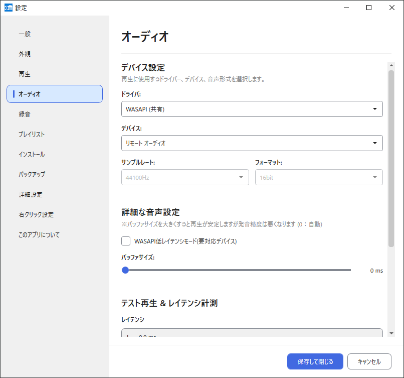
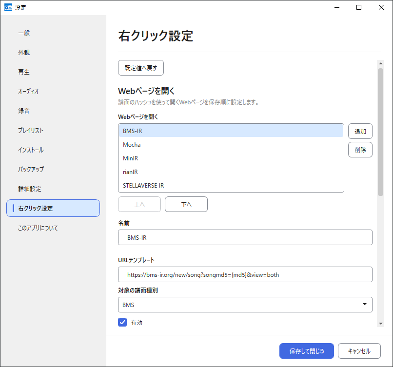
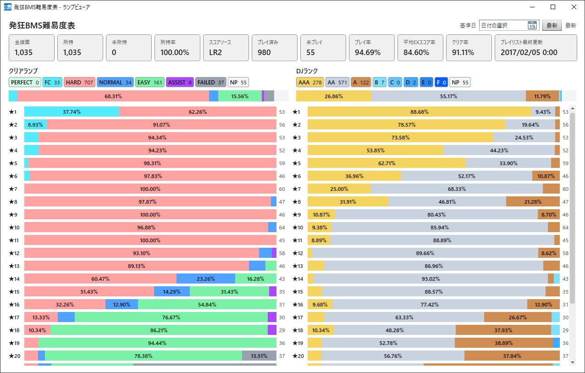

BeMusicSeeker Unofficial Fork ユーザーマニュアル v2.0

この文書は BeMusicSeeker Unofficial Fork の日本語マニュアルです。
従来版 BeMusicSeeker の基本的な使い方を引き継ぎつつ、この Fork 版で追加・変更された機能、処理の意味、注意点をまとめています。
目次
- はじめに
- 初期セットアップ
- 設定画面
- 右クリック設定
- 起動・リロード・進捗表示
- 画面構成
- ライブラリ一覧
- 検索
- 再生・録音
- プレイリスト
- インストール / 保留パッケージ
- メンテナンス
- プレイログ
- バックアップ・アンインストール
- FAQ / トラブルシューティング
- 参考資料
はじめに
BeMusicSeeker は、BMS ファイルの管理、検索、再生、インストール、プレイリスト管理、メンテナンスを支援する統合管理ツールです。
この Fork 版では、従来版の基本機能に加えて、以下のような改善が入っています。
- 大規模ライブラリ向けの初期化・リロード・一覧表示高速化
Everything 1.5 (x64)を利用した高速ファイル列挙とリソース索引作成- 導入先推定、推定先インストール、重複フォルダマージの高速化
- bmson 管理対応(再生は未対応)
- LR2に依存しないスタンドアローンモード
- LR2連携の強化(song.dbの生成・同期)
- ポータブルアプリ化
- プレイリストサマリー、外部同期 STATUS、URL1/URL2 補完、単体 / 範囲リロード
- インストール保留画面の強化、スマート上書き、ゼロノート譜面整理
- LR2互換性警告、解析エラー、重複ファイルチェックなどのメンテナンス画面
- 構造化され情報が強化された WARNING 表示
- 多言語対応とダークテーマ対応
- beatoraja連携(スコア読み込み・難易度表更新)
- プレイログ(LR2でもスコアDBに細工して逐次記録が可能)
注意
BeMusicSeeker は、設定によっては LR2 の song.db、config.xml、カスタムフォルダ出力先、BMS 実ファイルを移動/削除します。
大きな整理、インストール、削除、重複マージ、アンインストールを行う前には、LR2 関連ファイルや BeMusicSeeker の設定 / DB をバックアップしておくことをおすすめします。BMS ルートフォルダは容量が大きくなりやすいため、本アプリの操作前に毎回丸ごと控えるというより、普段から別ディスクなどへ定期的にバックアップする運用をおすすめします。song.db破損への対応であれば本アプリのバックアップ機能を使用していればゼロからの再構築は避けられるはずです。
初期セットアップ
BeMusicSeeker Unofficial Fork はインストール不要のポータブルアプリです。リリースページから最新版をダウンロードし、任意のフォルダへ展開して起動します。ZIP のまま実行せず、必ず書き込み可能なフォルダへ展開してください。
展開する前に、ダウンロードした ZIP を右クリックして プロパティ を開き、下部に セキュリティ の 許可する チェックボックスが表示されている場合は、チェックを入れて 適用 してください。これは Windows がインターネットから取得したファイルに付ける確認情報を、展開前に解除するための手順です。先に ZIP 側で許可しておくと、展開後の BeMusicSeeker.exe や DLL が Windows によって余分に制限されることを避けやすくなります。

アプリは実行ファイルの近くに config/user.config や data/song.db などを作成します。Program Files、読み取り専用フォルダ、同期中に競合しやすい場所へ置くと、設定保存やスタンドアローン DB 作成に失敗する場合があります。更新時は config と data を残したまま、本体ファイルを新しい版で上書きしてください。
非常に強く推奨、事実上必須: Everything 1.5 (x64)
可能であれば、先に Everything 1.5 (x64) を導入してください。
BeMusicSeeker は初期化時に BMS 譜面、音源、画像、動画などを大量に列挙します。Everything が利用可能な場合、ファイル列挙とリソース索引作成を高速化できます。未導入でも動作しますが、大規模なライブラリでは初回スキャンやリロードに時間がかかります。
Everything 側で BMS 関連フォルダのインデックス作成が完了し、検索できる状態になってから BeMusicSeeker を起動してください。
既存設定の引き継ぎ
従来版 BeMusicSeeker がインストール済みの環境では、初回起動時に既存の設定が自動コピーされます。コピー先はアプリ配置先の config/user.config です。元の BeMusicSeeker の設定ファイルは変更されません。
初回起動
初回起動時は、言語選択付きの初回設定ダイアログが表示されます。

言語を選んで設定画面へ進み、動作モードと必須項目を設定します。必須項目を入力して OK を押すまで、BMS ファイルの初回スキャンは開始されません。
登録フォルダを利用できない場合
起動時は「起動時に BMS ファイルをスキャン」の設定にかかわらず、登録したすべての BMS ディレクトリを確認します。LR2 連携モードでは、カスタムフォルダの通常・追加・ルート型の出力先も確認します。一つでも存在を確認できない、またはアクセスできない場合は、対象を表示して初期化を中断します。利用できない登録は自動では削除しません。
外付けドライブやネットワークドライブが一時的に切断されている場合は、接続を復旧してください。登録先が誤っている場合は設定の 一般 で BMS ディレクトリを修正し、カスタムフォルダ出力先は プレイリスト で修正してください。意図した場所にフォルダをまだ作っていない場合は作成し、アクセス拒否の場合は権限を確認してください。空フォルダを作成しても、以前の譜面が復元されるわけではありません。
修正後は設定画面の OK で初期化を再試行できます。接続を復旧してアプリを再起動することもできます。BMS ディレクトリは読取り可能であればよく、LR2 カスタム出力先にはファイルの作成・書込み・削除が可能であることも必要です。
動作モード
BeMusicSeeker には大きく 2 つの動作モードがあります。
スタンドアローン(LR2と連携しない)
LR2 の song.db を使わず、アプリ配下の data/song.db でライブラリを管理します。
主に必要な設定:
一般タブ: BMS ディレクトリインストールタブ: 新規インストール先
LR2 のスコア、LR2 用カスタムフォルダ出力、LR2IR 関連の一部機能は使いません。BMS ファイルの整理、検索、インストール、メンテナンスを BeMusicSeeker 側だけで行いたい場合に使います。
LR2と連携する
LR2 の config.xml / song.db / score.db を使って、LR2 の所持譜面、スコア、カスタムフォルダ出力と連携します。
主に必要な設定:
一般タブ: LR2 ディレクトリ、song.db、config.xmlプレイリストタブ: カスタムフォルダ通常出力先、追加通常出力先、ルートフォルダ出力先インストールタブ: 新規インストール先
LR2 と同じライブラリを BeMusicSeeker で管理したい場合はこちらを使います。
LR2 連携モードでは、初回準備や今後の更新で song.db に BeMusicSeeker 用のテーブルや index が追加される場合があります。設定画面で OK を押して初回スキャンを始める前に、song.db、config.xml、score DB など LR2 関連ファイルをバックアップしておくと安心です。
LR2 連携モードでは、BeMusicSeeker は所持 BMS の song / folder 情報を LR2 の song.db に書き込み、LR2 側の起動時再帰スキャンをできるだけ発生させない状態を維持します。初回や設定変更後は不足している既存 row を backfill します。進捗は起動時進捗またはステータスバーに表示され、完了後は通常のインストール、削除、マージ、拡張子変更などのライブラリ更新に合わせて差分更新されます。bmson は LR2 の song / folder には書き込まず、BeMusicSeeker 側の管理情報として扱います。
Everything が正常に検索できた結果、譜面ファイル(BMS / bmson)が 0 件だった場合、または Everything が利用できず通常のファイルシステム走査へ切り替わった後も譜面ファイルが 0 件だった場合、既存の song.db に楽曲が残っていれば、誤って空のライブラリとして書き戻さないように song.db 更新をスキップします。この警告が表示された場合は、BMS ディレクトリ設定が楽曲のある場所を指しているか、Everything 側でそのフォルダを検索できるかを確認してください。
LR2 song.db の同期中は、所持譜面と LR2 song.db を同時に変更する操作が一時的に止まる場合があります。ステータスバーに失敗や未完了が表示された場合は、再試行 を押してください。必要に応じて設定画面の LR2 song.db データを再同期 から、所持譜面とプレイリストを正本として song / folder を再生成できます。
初回スキャン
設定完了後、初回スキャンが始まります。初回は全譜面ファイルを確認し、DB へ登録し、インストール推定やメンテナンス情報に必要な基礎データを作成します。
ライブラリ規模、ディスク速度、Everything の利用状況によって、数分からそれ以上かかる場合があります。
初回構築が完了すると、次回以降は差分更新中心になります。BMS フォルダ全体を大きく移動した場合や、DB を空から作り直した場合は、再び重い処理になります。
参考までに私の環境では約21万譜面の規模で初回DB構築が11分程度でした。2回目以降の起動では、差分導入可能までが20秒程度、ライブラリ一覧の完全な表示が可能になるまでが40秒程度でした。SSD環境であればそれなりに古いPCでもこの程度の速度で構築可能です。
設定画面
設定画面は OK を押すと保存されます。設定内容によって、即時反映、次回利用時の反映、スコアのみ再読み込み、ライブラリリロード、再初期化、再起動要求のいずれかになります。右クリック設定 カテゴリの設定は次にコンテキストメニューを開いたときから使われます。
一般

一般 タブでは、言語、動作モード、BMS ディレクトリ、LR2 ディレクトリ、song.db、config.xml、beatoraja ディレクトリ などを設定します。
スタンドアローンモード、LR2 連携モードのどちらでも、BMS ディレクトリに譜面を探すルートフォルダを登録します。LR2 連携モードでは、あわせて LR2 ディレクトリと DB / XML パスも設定します。
BMS ディレクトリは 追加 ボタンのほか、フォルダをリストへドラッグアンドドロップして追加できます。
BMS ディレクトリ同士を同じ場所、または親子関係にする運用は想定していません。LR2 config.xml の <jukebox> を手動編集して親子関係の登録が残っている場合は、設定保存時に見直しを促すメッセージが表示されます。
スタンドアローン
LR2 本体を所持していない場合でも本アプリ単独で BMS の管理が行えるモードです。
BMS ディレクトリに設定した場所が譜面を探す対象となります。
data\song.db に所持 BMS 管理用の DB が作成されます。保存される内容は LR2 連携モード時とほとんど変わりませんが、カスタムフォルダの出力や LR2 での選曲時に必要な固有のデータの記録などは行われないため LR2 を使用していない場合は僅かに処理の負荷が下がります。
LR2と連携する
従来の BeMusicSeeker からある連携モードです。
LR2 連携モードでは、BeMusicSeeker が LR2 song.db に必要な song / folder 情報を生成・差分更新します。BMS ディレクトリの追加・削除は BeMusicSeeker の 一般 タブで行い、LR2 SETUP の JUKEBOX タブでは変更しない運用を推奨します。
通常は LR2 ディレクトリ だけを指定してください。標準配置の song.db と config.xml / config.xmh はそこから自動設定されます。各ファイルの 参照 は標準配置を使えない場合だけ個別設定するための操作で、ファイル選択の前に確認が表示されます。状態表示では、現在のパスがLR2ディレクトリ由来の標準配置か、個別設定かを区別します。
初回設定保存時および LR2 連携モードでの起動時には、LR2 config.xml の <autoreload> を 0 に設定し、LR2 SETUP の「データベース自動更新」を「手動のみ」にします。これは BeMusicSeeker が song.db を管理する前提で、LR2 自身の自動更新による追加スキャンや、Shift_JIS で表現できないパスが崩れた DB 行の追加を避けるためです。
ただし、LR2 でのスキャン時や再生時にエラーとなる譜面でも、本アプリでの管理対象譜面とするために song テーブルに保存された状態となります。このような譜面は選曲画面に表示されていたとしても、再生を開始した場合に不具合が生じる可能性もあるのでご了承ください。既知の LR2 互換性リスクの一部は LR2互換性警告 画面で確認できます。
LR2 song.db データを再同期 ボタンは folder, song テーブルを再生成するものです。何らかの理由で DB が不完全な状態になってしまった場合でも、所持譜面とプレイリストから再解析・再生成を行います。
LR2プレイログ
LR2 プレイログは、LR2 のプレイヤー別 score.db に BeMusicSeeker 用の table / index / trigger を導入し、導入後に LR2 でプレイした履歴を逐次記録する機能です。LR2 連携モードで利用できます。
LR2 プレイログは、導入後に LR2 でプレイした履歴だけを記録します。導入前の過去プレイはプレイログ画面には表示できません。
LR2 プレイログ の状態表示は、選択中プレイヤーの score.db を検査した結果です。未導入の場合や table / index / trigger の一部不足・不整合がある場合は、横のボタンから導入または修復できます。実行前に対象プレイヤーが正しいことを確認し、必要に応じて score.db をバックアップしてください。
LR2 プレイログを無効化または削除する場合は、設定画面 バックアップ タブの データのアンインストール から LR2 プレイログを無効化 / 削除... を実行します。トリガーのみ削除すると今後の記録だけを止め、履歴 table も含めて削除すると既存のプレイログ履歴も削除します。
beatoraja連携
beatoraja については、スコア DB の読み込みや難易度表キャッシュ出力など一部連携に対応していますが、beatoraja 全体を管理するためのツールではありません。beatoraja のDB更新を高速に行いたい場合は songdata-updater をご利用ください。
beatoraja 連携では beatoraja ディレクトリを指定します。直下の config_sys.json から tablepath と playerpath を読み取り、スコア読み込みでは選択したプレイヤーフォルダの score.db を使います。
難易度表の一元管理（Table URL インポート / .bmt 出力）
Note
BeMusicSeeker と beatoraja の両方で同じ難易度表をダウンロード・更新すると、処理時間と管理対象が重複します。
Table URL インポートと .bmt 出力は、難易度表を BeMusicSeeker 側で一元管理し、beatoraja には BeMusicSeeker が出力した .bmt キャッシュを読み込ませるための機能です。
beatoraja の Table URL をインポートする を押すと、beatoraja のリソースタブで Table URL に登録済みの難易度表を BeMusicSeeker のプレイリストとして取り込みます。既に同じ URL のプレイリストがある場合は再読み込みせず、BMT SORT への反映だけを行います。新規 URL は通常の URLを指定して読み込む と同じように読み込み、外部から読み込めない場合は beatoraja の tablepath 配下にある .bmt キャッシュから復元を試みます。復元時も BeMusicSeeker 側の正本 URL は config_sys.json の tableURL に書かれていた文字列です。インポートに成功した難易度表と既存一致した難易度表は tableURL の並び順で BMT SORT 先頭へ配置され、BeMusicSeeker にのみ存在するプレイリストは現在の BMT SORT 順を保って最後尾へ移動します。
.bmtを出力する を有効にする前に Table URL をインポートしておくと、beatoraja の選曲画面での難易度表の並びを維持しやすくなり、beatoraja 側で難易度表をリロードする必要も少なくなります。未取り込みの Table URL がある状態で .bmtを出力する を ON にすると、この案内が表示されます。
.bmtを出力する(難易度表読み込み互換処理) を有効にすると、プレイリストサマリーの BMT OUTPUT が ON のプレイリストを beatoraja が読み込める .bmt キャッシュとして config_sys.json の tablepath 配下へ出力します。これは beatoraja 側の level 集約処理が重く、難易度表読み込みで遅延する環境向けの互換処理です。外部同期表は元の難易度表 URL、ローカルプレイリストは bemusicseeker://playlist/{playlist_id} を使って .bmt の保存名を決めます。出力先直下には BeMusicSeeker 管理用の .bemusicseeker-bmt-manifest が作られ、設定変更や再出力時の cleanup では、この manifest に記録された .bmt だけを削除対象にします。起動時などの全体確認では、manifest と実ファイルの更新日時・サイズ、プレイリストの hash / 更新日時が一致する .bmt は再生成を省略します。BMT OUTPUT を OFF にしたプレイリストの .bmt は削除対象になります。
.bmt出力を無効化しても既存ファイルを削除しない を有効にした状態で .bmt 出力を無効化すると、BeMusicSeeker が過去に出力した .bmt ファイルと beatoraja 側の登録 URL を残したまま、以後の自動再出力だけを止めます。既存の .bmt を beatoraja 側で引き続き読み込みたい場合や、一時的に再生成を止めたい場合に使います。無効にした状態で .bmt 出力を OFF にすると、manifest で管理されている .bmt と BeMusicSeeker 管理の tableURL は cleanup 対象になります。
.bmt hash 出力 では、folder song の md5 / sha256 の出し方を選べます。オリジナル はプレイリストに保存されている hash だけをそのまま出力します。md5/sha256をできるだけ補完 は、所持譜面や譜面メタデータから安全に解決できる場合に不足している hash を補完します。できるだけsha256のみ は、sha256 を出せる譜面では md5 を出さず sha256 のみに寄せますが、sha256 を解決できない譜面は md5 のまま残します。既定値は オリジナル です。段位コースの hash は元の難易度表データをそのまま使い、この補完対象にはなりません。この設定だけを変更した場合、未変更の .bmt は直ちには再生成せず、次に対象プレイリストが再出力されるときに反映します。
config_sys.jsonに.bmtのURLを登録する(選曲画面での並びが安定します) が有効な場合、BeMusicSeeker 管理の .bmt URL を config_sys.json の tableURL へ登録します。管理外の tableURL は既存順を維持し、BeMusicSeeker 管理分はプレイリストサマリーの BMT SORT 順で後ろに並びます。
外観

テーマや表示に関わる設定を変更します。外観変更は基本的にライブラリ再構築を必要としません。
一覧の外観設定では、ライブラリ一覧、プレイリスト詳細、プレイログ、プレイリストサマリーで共通して使う一覧表示を調整できます。フォントサイズ、行の高さ、ヘッダーの高さを変更できます。既定値はフォントサイズ 11、行の高さ 19、ヘッダーの高さ 22 です。
再生
譜面を再生するプレイヤーを選択します。内蔵プレイヤーは音声のみの簡易再生用です。uBMplay、BMIIDXView2015、LR2 など外部プレイヤーを使う場合は、実行ファイルのパスを指定します。
スタンドアローンモードでも、再生用アプリとして LR2body を指定できます。これは LR2 の DB と連携するかどうかとは別の設定です。
オーディオ

再生ドライバ、出力デバイス、サンプルレート、フォーマット、バッファサイズ、音量などを設定します。音が出ない、遅延が大きい、音切れする場合は、このタブの設定を確認してください。
録音

録音形式、品質、サンプルレート、出力ファイル名書式、エンコーダの場所などを設定します。外部エンコーダを使う場合は、lame.exe、oggenc2.exe など対応する実行ファイルを含むフォルダを指定します。
プレイリスト設定

カスタムフォルダ出力先、難易度表リスト取得 URI、MD5-URL マッピング TSV 取得 URI、URL1/URL2 補完設定を変更します。
カスタムフォルダ出力先
LR2 連携モードでは、プレイリストを LR2 のカスタムフォルダとして出力できます。このタブでは、BeMusicSeeker が出力するカスタムフォルダの置き場を決めます。
通常出力先 は、本アプリで作成するプレイリストの既定の出力先です。特に出力先を分けないプレイリストはここへ出力されます。LR2 連携モードでは必要な LR2 BMS ルート登録が保存時や起動時修復で同期され、従来版との互換性のため内部的には楽曲検索対象にも含まれます。ただし本来は楽曲インストール先として想定しない場所のため、一般タブの BMS ディレクトリ一覧、インストールタブの新規インストール先候補、ライブラリツリーのフォルダノードには表示されません。既存の LR2 BMS ルートと同じ場所は保存時の確認後に指定できますが、その親・子フォルダは指定できません。他のカスタムフォルダ出力先との同一・親子関係も禁止します。
追加通常出力先 は、プレイリストごとに選べる追加の出力先です。主要難易度表、差分作家表、個人作成表、イベント表のようにジャンルごとのフォルダを作り、プレイリストを振り分けたい場合に使います。登録名は出力先フォルダ名そのもので、プレイリストサマリーの OUTPUT 列やプロパティ画面ではこの名前で選択します。LR2 連携モードでは LR2 の <jukebox> に同期されますが、本アプリでは楽曲検索対象やインストール先としては扱わず、BeMusicSeeker 管理のカスタムフォルダ出力先として扱います。他のカスタムフォルダ出力先と同じ場所、または親子関係になる場所は指定できません。通常出力先と同様に、既存の LR2 BMS ルートと同じ場所は保存時の確認後に指定できますが、その親・子フォルダは指定できません。追加出力先を削除する場合、その出力先を使っているプレイリストは通常出力先へ戻ります。
ルートフォルダ出力先 は、プレイリストのプロパティで ルートフォルダにする を有効にしたものの出力先です。LR2 の選曲画面のルートに表示されるため、よく使う表へ素早くアクセスしたい場合に使います。既存の LR2 BMS ルートと同じ場所、または既存登録を含む親フォルダは保存時の確認後に指定できますが、既存登録の子フォルダは指定できません。他のカスタムフォルダ出力先との同一・親子関係も禁止します。
出力フォルダ既定値 は、新しく作成するローカルプレイリストと、外部 URL から新規追加する表で最初に有効にする出力フォルダ種別を決めます。既存プレイリストには影響しません。作成後のプレイリストは、プロパティまたはプレイリストサマリーの 一括変更... から個別に変更できます。
Tip
表を普段の置き場ごとに整理したい場合は 追加通常出力先、特によく使う表を選曲画面の最初の階層に出したい場合は ルートフォルダ出力先 を使います。プレイリストごとの OUTPUT や ルートフォルダにする は、プロパティまたはプレイリストサマリーの 一括変更... から設定できます。
Caution
以前使っていた出力先が LR2 に登録されたままでも、一般ページで一旦削除せず、上記の条件で出力先として再設定できます。保存時の確認に同意すると、本アプリの管理領域として採用します。プレイリストの出力フォルダ内のファイルやフォルダは、出力更新・設定変更・プレイリスト削除に伴い削除される場合があるため、重要なデータを置かないでください。楽曲検索に残るのは通常出力先だけです。追加・ルート出力先の採用や通常出力先の変更で検索対象から外れる場所は、同じ確認に表示します。
プレイログ FOLDER 表示プリセット
プレイログ FOLDER 表示プリセット では、プレイログ画面右上のドロップダウンメニューに表示するプレイリストセットを作成できます。追加 または 編集 を押すと別ウィンドウが開き、プリセット名と対象プレイリストを複数選択できます。ここで作成したプリセットは、プレイログの絞り込みや FOLDER 列の表示補正に使います。
URL 補完
URL 補完については URL1/URL2 補完 を参照してください。
インストール

新規インストール先と、新規フォルダ作成時の命名形式を設定します。
どちらの動作モードでも、登録済み BMS ディレクトリ内からインストール先を選ぶ必要があります。LR2 連携モードでは、通常出力先、追加通常出力先、ルートフォルダ出力先は BMS ディレクトリ一覧と新規インストール先候補には表示されません。通常出力先を変更すると、変更前の場所は楽曲検索対象から外れます。別の出力先として引き続き使わない場合は、LR2 の登録からも外れます。楽曲を検索したい場合は、出力管理領域と重ならない BMS ディレクトリを使用してください。
バックアップ

プレイリストのバックアップ / 復元、LR2 関連ファイルのバックアップ、世代数などを設定します。互換性に不安がある更新や大きな整理を行う前は、バックアップを取っておくことをおすすめします。
詳細

確認メッセージ、初期化、LR2 連携、インストール補助などの詳細設定を変更します。
起動時のファイルチェックを省略すると起動は軽くなりますが、BMS ルートの列挙と導入先推定に使うリソース索引を作りません。保留パッケージの導入先推定を行うには、手動でライブラリの リロード または 初期化再実行 を実行してください。
インストール関連の設定には、元パッケージ削除やスマート上書きなど実ファイル操作に影響するものがあります。内容を確認してから変更してください。
詳細タブの各設定
| グループ | 設定 | 既定値 | 内容 |
|---|---|---|---|
| メッセージ表示 | 譜面ビューアへの登録時に確認メッセージを表示する | ON | 譜面ビューア登録操作の前に確認を表示します。 |
| メッセージ表示 | 差分インストールの確認メッセージを表示する | ON | 推定先への差分インストールなど、既存フォルダへ入れる操作の前に確認を表示します。 |
| メッセージ表示 | 重複ファイルチェックのマージ/整理時に確認メッセージを表示する | ON | 重複ファイルチェックでフォルダをマージする操作と、同一フォルダ内の重複 hash 譜面を整理する操作の前に確認を表示します。 |
| メッセージ表示 | リコメンドの更新メッセージを表示する | ON | リコメンド情報更新時の通知を表示します。 |
| 初期化 | 起動時にBMSファイルと構成ファイルのスキャンを行う | ON | 起動時にファイル差分確認とリソース索引構築を行います。OFF にすると初期化は高速化されますが、DB に保存済みのライブラリ一覧だけを読み込むため、手動でライブラリの リロード または 初期化再実行 を行うまで、保留パッケージの導入先推定に必要な索引がなく推定できない場合があります。 |
| 初期化 | 起動時にプレイリストの更新チェックを行わない | OFF | 起動時の外部プレイリスト更新確認を省略します。必要な場合は手動でプレイリストをリロードしてください。 |
| 初期化 | 起動時の初期選択を インストール > 保留 にする | ON | 起動後の初期表示を保留パッケージ画面にします。新規導入や保留整理を優先したい場合向けです。 |
| 初期化 | song.dbアクセス最適化PRAGMAを有効にする | ON | DB 読み込み時に読み取り向けの SQLite PRAGMA を設定し、起動やリロードを高速化します。通常は ON のままにします。 |
| LR2連携 | 起動時にLR2IRランキングキャッシュを更新する | OFF | LR2IR の ranking cache XML を起動後に読み込み、RANKING、RANK UPDATE、T-SCORE、ΔMAX などの表示用データを更新します。初回構築や LR2ID 変更後は重くなる場合があるため、必要な場合だけ ON にしてください。 |
| LR2連携 | オフラインスコアのランキング推定を行う | OFF | LR2IR ranking cache の適用時に、ローカルスコアが LR2IR 上のスコアより高い譜面の順位を推定します。起動時に反映したい場合は 起動時にLR2IRランキングキャッシュを更新する も ON にしてください。 |
| LR2連携 | LR2IRのスコアをDLしIR未送信を検出する | OFF | LR2IR のスコア情報を取得し、ローカルスコアとの差分から未送信状態を検出します。 |
| インストール | ダウンロード実行後に自動的にインストールを試みる | OFF | URL からダウンロードしたパッケージを、可能であればそのままインストール処理へ進めます。ON にすると便利ですが、多重圧縮などでそのままでは導入に進めない形式のファイルの場合は保留画面に追加されないといった留意事項があるので規定値は OFF にしています。プレイリスト詳細で複数行を選択して URL を取り込む場合は、この設定に関わらず、対応ファイルとして取得できた URL だけを導入処理へ渡します。 |
| インストール | 新規判定でも自動インストールせず保留に追加する | OFF | 新規作品として十分なリソースが揃っていても自動導入せず、必ず保留一覧で確認できるようにします。 |
| インストール | 複数候補でも高一致なら第1候補を導入先に設定する | OFF | 複数の導入先候補が残った場合でも、TITLE / ARTIST が十分に一致すると判断できる場合は最上位候補を INSTL DST に設定します。既所持譜面が混じるパッケージでは、hash 多数決、リソース / メタデータ評価、候補フォルダ内の譜面数で決まらない場合の最後の自動設定として使います。ON でも注意 WARNING と候補リストが残ることがあります。難易度表パッケージの利用などで重複BMSが多い環境で ON にする想定です。 |
| インストール | 通常インストール時、既所持譜面が残っていても元パッケージを削除する | OFF | 通常インストール後、削除範囲外の所持コピーなどを確認できた既所持の残存譜面と、空になった元フォルダを削除します。未所持譜面・非譜面ファイル・確認できない残存物や、保護すべき所持実体が残る場合は、残存物の追加削除を行いません。OFF でも正常に移動した元ファイルは除去されます。取り消しにくい操作なので、通常は OFF を推奨します。 |
| インストール | 差分導入時に更新日時とサイズを比較して同梱ファイルの上書きを最適化する | ON | スマート上書き を有効にします。 |
| インストール | スマート上書き時、.bmx/.pmx/*.txt は上書きせず自動採番で保持する | OFF | スマート上書き で保護対象拡張子を上書きせず、連番名で残します。 |
スマート上書き
スマート上書きは、差分導入やマージで既存フォルダへファイルを移動するとき、譜面ファイル本体以外の同梱コンポーネント、つまり音源、BGA、動画、画像、readme などの衝突を調整する機能です。既定では有効です。
端的に言えば調整前の古い音源やBGAで上書きすることを防ぐ目的の機能です。
通常の上書きでは、同名ファイルが導入先にある場合、source 側ファイルで上書きします。スマート上書きが有効な場合は、source と導入先のファイルサイズ、更新日時を比較し、次のように処理します。更新日時の比較には、おおむね 2 秒までの差を同一時刻として扱う許容があります。
- 導入先に同名ファイルがない場合は、そのまま移動します。
- サイズと更新日時がほぼ同じ場合は同一ファイルとみなし、source 側を削除して導入先の既存ファイルを残します。
- source 側の方が新しい場合は、導入先を source 側で上書きします。
- 導入先の方が新しい、または同等以上と判断した場合は、導入先を残して source 側を削除します。
スマート上書き時、*.bmx/*.pmx/*.txt は上書きせず自動採番で保持する を有効にすると、.bmx、.pmx、.txt はスマート上書きで上書き対象になった場合でも、導入先の既存ファイルを残し、source 側を name(1).txt のような空き連番名で保存します。連番候補に同一内容のファイルが既にある場合は、同じファイルを増やさず source 側を削除します。内容が異なる場合、または hash 比較ができない場合は、空いている連番名へ移動します。
NOTE: BMS / PMS / bmson などの譜面ファイル本体は、同名衝突時に上書きせず、chart_.bms のように名前をずらして導入します。これはスマート上書き設定とは関係のない本アプリでの挙動です。
同梱ファイルの配置先に同名のフォルダーがあるなど、ファイルとフォルダーの種類が衝突する場合は、スマート上書きの有効・無効にかかわらず、そのパッケージを変更前に拒否します。拒否したパッケージのファイル移動・上書き・削除と導入完了の登録は行わず、警告に対象のパスを表示します。導入先や配布物の内容を確認してから、再度操作してください。一括導入では、衝突しない他のパッケージは引き続き処理します。
この設定は、推定先へのインストール、既所持譜面のみパッケージのリソース上書き、重複フォルダのマージなど、既存フォルダへ同梱ファイルを移動する処理で使われます。未所持の新規作品を新しいフォルダへ丸ごと導入する場合は、そもそも同名ファイル衝突が少ないため、スマート上書きの影響は限定的です。
右クリック設定

右クリック設定 カテゴリでは、譜面のコンテキストメニューに表示する Webページを開く と プログラムから開く の項目を編集できます。各一覧で 追加、削除、上へ、下へ、有効 の切り替えを行い、項目名と順序も設定できます。
Webページを開く では URL テンプレートと対象譜面形式（BMS、bmson、両方）を編集します。テンプレートには {md5} または {sha256} を記述できます。必要な hash がない譜面では、その項目はメニューに表示されません。追加 直後は名前と URL テンプレートが未入力のため入力欄がエラー表示になり、両方を有効な内容にするまで設定を保存できません。初期状態は次の 6 項目ですべて有効です。
| 順序 | 項目名 | URL テンプレート | 対象 |
|---|---|---|---|
| 1 | BMS-IR | https://bms-ir.org/new/song?songmd5={md5}&view=both |
BMS のみ |
| 2 | Mocha | https://mocha-repository.info/song.php?sha256={sha256} |
BMS / bmson |
| 3 | MinIR | https://www.gaftalk.com/minir/#/viewer/song/{sha256}/0 |
BMS / bmson |
| 4 | rianIR | https://rianir.link/ranking?sha256={sha256} |
BMS / bmson |
| 5 | STELLAVERSE IR | https://ir.stellabms.xyz/charts/{md5} |
BMS / bmson |
| 6 | Kaleid IR | https://kaleidir.com/charts/{sha256} |
BMS / bmson |
所持譜面では、プログラムから開く に項目を追加できます。項目名、順序、有効状態、実行ファイル、引数を編集できます。追加 直後は名前と実行ファイルが未指定のため、両方の入力欄にエラーが表示されます。引数の既定値は {filePath} です。実行ファイルは参照ボタンから選びます。名前が空欄または空白だけならファイル名（拡張子なし）が自動入力され、入力済みの名前は保持されます。
引数テンプレートには {filePath} が必須です。空欄、未知・閉じていない置換記号、閉じていない二重引用符などは、入力欄に理由が表示されます。修正するとエラーが解消します。無効にした項目も、有効な内容にするまで保存できません。保存時には最初の不正なプログラム項目が選択されます。
引数は二重引用符で区切りを指定でき、譜面パスは引数の分割後に置換されるため、空白を含むパスも一つの引数として渡せます。例えば --file="{filePath}" のようにオプションも指定できます。単一引用符は通常文字として扱われ、{filePath} 以外の波括弧は使用できません。実行ファイルを直接起動し、作業フォルダーには実行ファイルのあるフォルダーを使います。
これらの設定は通常の一覧、未所持のプレイリスト行、プレイログで共通に使われます。hash だけの行には Webページを開く だけが表示され、ローカル譜面へ解決できた行にだけ プログラムから開く が表示されます。実行ファイルや譜面が見つからない場合、または起動に失敗した場合はエラーを表示します。
カテゴリを開いただけでは保存済み設定は変更されません。OK / Save は入力を検証してまとめて保存し、キャンセル またはウィンドウの閉じる操作は編集内容を破棄します。既定値へ戻す はいつでも使用でき、押した後に保存すると既定値が反映されます。
起動・リロード・進捗表示
自動アップデート

起動時に新しいバージョンが見つかった場合、自動アップデート用のダイアログが表示されます。更新 を押すと、選択した更新パッケージをダウンロードし、検証後にアプリを終了して updater がファイルを置き換えます。更新が完了するとアプリは自動的に再起動します。
更新パッケージは、通常版と解析済みメタデータ同梱版が表示される場合があります。通常版はアプリ本体のみを更新します。解析済みメタデータ同梱版は、最新版の解析済みメタデータも同梱するため、未所持譜面でもプレイリスト上でメタデータを参照しやすくなります。
v2.1.0.0 より前のバージョンから v2.1.0.0 へ更新する場合は、自動アップデート機能自体がまだ導入されていないため、従来どおり Release ページから zip をダウンロードし、展開して手動で上書きしてください。v2.1.0.0 以降を利用している場合は、今後 v2.2.0.0 などの新しいバージョンが公開されたときに、このダイアログから自動更新できます。
起動直後の初期化中は、更新パッケージを選択してもすぐには適用できない場合があります。この場合は、初期化が安全に中断または完了できる状態になるまで待ってから更新を開始してください。更新中はアプリ本体を終了するため、譜面のインストール、DB 更新、ファイル出力などの処理中に無理に閉じないよう、必要な終了待機が行われます。
自動更新に失敗した場合や、手動で内容を確認してから更新したい場合は、Release Page を押して GitHub のリリースページを開き、従来どおり zip をダウンロードして上書きできます。
進捗表示
BeMusicSeeker の起動処理は段階的に進みます。
- 設定と DB の確認
- BMS ファイル列挙
- DB との差分確認
- 追加・削除・更新の反映
- インストール推定やリソース索引の準備
- 画面表示可能状態への移行
- プレイリスト、スコア、譜面メタデータ、メンテナンス情報などのバックグラウンド処理
ステータスバーには、初期化、ファイル差分確認、プレイリスト同期、導入先推定などの進捗が表示されます。

ライブラリのリロード
ライブラリ右クリックの リロード は、所持ファイルの追加・削除・更新を反映する操作です。DB 全体の作り直しやスコア再読み込みではありません。
以下のような場合に使います。
- BMS フォルダへファイルを追加した
- BMS フォルダからファイルを削除した
- BMS ルートフォルダを増減させた
- 外部で BMS フォルダを移動・改名した
登録フォルダの一部が利用不能な場合、リロードは警告して中断し、確認できないフォルダを削除済みとして反映しません。接続や設定を修正してからリロードを再実行してください。走査中に切断を検出した場合も差分の反映を中断します。
初期化再実行
初期化再実行 は通常のリロードより重い操作です。外部ツールで DB を編集した場合や、状態を大きく作り直したい場合に使います。ここでの初期化とはアプリ起動毎の初期化処理のことでありライブラリの再構築を指す用語ではありません。
プレイリストのリロード
プレイリストのリロードは、外部難易度表やプレイリスト定義を再取得する操作です。
プレイリストツリールートのリロードは、外部同期が有効なプレイリストを対象にします。
プレイリスト単体やサマリー選択範囲からのリロードは、選択したプレイリストを外部同期フラグに関係なく対象にします。
リロード失敗は、プレイリストサマリーの STATUS とログに集約されます。
画面構成
主画面は、左サイドバーと右側の一覧で構成されています。
左サイドバーには、ライブラリ、プレイリスト、インストール、メンテナンスなどのツリーがあります。右側の一覧は、選択した画面に応じて譜面一覧、プレイリスト詳細、プレイリストサマリー、保留パッケージ、メンテナンス結果を表示します。
列幅、表示/非表示、表示順は画面ごとに保存されます。ヘッダー右クリックから列表示を変更できます。列順や列幅はマウスドラッグで調整できます。
ライブラリ一覧
ライブラリ一覧では、登録済み譜面を検索・再生・整理できます。
強力な検索構文を備えています。 キーワード検索構文ガイド を参照してください。
title:、artist:、playlist:、rate: などの field 指定や、除外検索、OR、正規表現、数値範囲検索を使えます。TOTAL、DIFFICULTY などのカラムで背景色が付いているセルは未定義だったことを表しています。total:undef などで検索可能です。

列ヘッダーをクリックするとソートできます。TITLE、ARTIST、PATH、LEVEL、CLEAR など、多くの列を表示できます。列の表示や順番はヘッダー右クリックメニューから変更できます。
一覧のコピー操作
ライブラリ、プレイリスト詳細、インストール / 保留などの一覧では、キーボードで表示内容をコピーできます。
Ctrl + C: 現在フォーカスされているセルの表示値をコピーします。URL 列など一部の列では、画面上の短い表示ではなく実際に開く URL がコピーされます。Ctrl + Shift + C: 選択中の行を TSV 形式でコピーします。複数行を選択している場合は、選択行がまとめてタブ区切りテキストになります。表計算ソフトやテキストエディタへ貼り付けて確認するときに使えます。
一覧の右クリックメニュー

譜面行やプレイリスト行を右クリックすると、選択中の行に対する操作を呼び出せます。表示される項目は、通常ライブラリ、プレイリスト詳細、未所持譜面、保留、新規、メンテナンス画面など、現在の画面と選択行の種類によって変わります。
開く / 外部ページ:
Webページを開く:設定画面 > 右クリック設定で設定した有効な項目を、設定した順序で表示します。既定では BMS-IR、Mocha、MinIR、rianIR、STELLAVERSE IR、Kaleid IR が登録され、BMS-IR は BMS のみに対応します。各 URL のテンプレートが必要とする MD5 / SHA-256 がない行では、その項目は表示されません。本体URLを開く/差分URLを開く: プレイリスト由来または URL 補完で得られた本体 URL / 差分 URL を開きます。複数行を選択している場合は選択中の本体URLを取り込む/選択中の差分URLを取り込むと表示され、確認後に対応ファイルとしてダウンロードできる URL だけを導入処理へ渡します。この一括取り込みではブラウザで開く必要がある URL は開かずにスキップし、進捗はステータスバーに表示されます。外部APIから入手先を探す: プレイリスト詳細で、選択行の MD5 を外部 API に問い合わせ、本体パッケージの入手先候補を探します。URL1/URL2を使わないため、URL が空の行でも MD5 があれば対象になります。エクスプローラで開く: 譜面ファイルのあるフォルダを Explorer で開きます。インストール先を開く:INSTL DSTやインストール先として記録されているフォルダを開きます。関連付けで開く: 譜面ファイルを OS の関連付けで開きます。プログラムから開く:設定画面 > 右クリック設定で登録したプログラムを、ローカルに解決できた譜面へ実行します。hash だけの行や未所持譜面には表示されません。テキストファイルを開く: 同じフォルダ内の readme などの文書候補をサブメニューから開きます。譜面ビューアで開く: 譜面ビューアへ登録または表示します。
スコア / ranking:
ランキングデータの更新: 対象譜面の ranking cache / IR データを更新します。起動時にLR2IRランキングキャッシュを更新するが OFF の場合でも、手動実行時は対象譜面のランキングデータ更新を試みます。ただし、この機能はhttp://www.ribbit.xyzの LR2IR キャッシュ情報に依存しています。現時点では同サイトが利用できないため、この機能は実質的に動作しません。
文字コード / ファイルスキャン:
文字化けを修正: 日本語 Shift_JIS、UTF-8、韓国語 KS_C_5601、簡体字 GB2312、繁体字 Big5 などから文字コードを指定します。修正済みにするは、現在の推定結果を確認済みとして扱います。ファイルスキャン: 選択譜面を再スキャンし構成ファイルフルスキャン画面などで確認できる譜面の健康度を再設定します。全譜面を再スキャンはライブラリ内の譜面全体を対象にします。無視リストに追加/無視リストから削除は、構成ファイルフルスキャンなどの表示対象から外すための設定です。
インストール / 導入先:
インストール→インストール先を推定: 保留譜面の導入先を推定します。インストール→マージ先を推定: 既所持譜面のみパッケージやリソース寄せ向けに、同梱リソースを評価へ足さない推定を行います。インストール→推定先にインストール:INSTL DSTに導入します。インストール→警告を無視してインストール: 推定先を使わず通常の新規インストールとして扱います。インストール→インストール先をクリア:INSTL DST、推定先表示、推定 warning、候補を消します。インストール先を修正: 導入済み譜面のinstl_dstを再推定し、推定先に再インストールで記録を更新します。再インストール先をクリアで候補を消します。
ファイル整理:
移動: ライブラリ内のルートフォルダ候補へ譜面ファイルを移動します。エントリー削除: プレイリスト詳細で、選択行をプレイリストから外します。ファイル削除:無効な拡張子に変更(*.bmx/pmx)またはごみ箱へ移動を選べます。フォルダの自動リネーム: 選択譜面のフォルダ名を設定のフォルダ名書式に合わせて変更します。音声ファイルに変換: 設定画面の録音設定に従い、譜面再生結果を音声ファイルとして出力します。
通常ライブラリで ファイル削除 → ごみ箱へ移動 を実行すると、選択譜面を削除した結果として対象フォルダ内に譜面が残らない場合、フォルダごとごみ箱へ移動する確認が出ることがあります。この場合、譜面以外の同梱ファイルも一緒に移動対象になります。確認ダイアログの対象パスを見てから実行してください。
画面固有:
一覧から削除: 新規 / 保留 / 導入済みパッケージ表示から対象を取り除きます。実ファイル削除を伴う操作とは区別してください。メタデータ解析失敗記録を除去: 解析エラー画面で表示され、保存済みの解析失敗記録を削除して再パース対象に戻します。
未所持譜面のプレイリスト詳細では、設定した Webページを開く、本体URLを開く、差分URLを開く、外部APIから入手先を探す、譜面ビューアで開く、ランキングデータの更新、エントリー削除 など、プレイリスト行に対する操作を利用できます。各項目は必要な MD5 / SHA-256 がある行で表示されます。
実ファイルを変更する操作は、読み取り専用属性などで失敗しにくいよう Windows Explorer に近い挙動へ寄せています。ただし、削除や上書きは元に戻せない場合があるため、対象を確認してから実行してください。
無効な拡張子に変更
無効な拡張子に変更(*.bmx/pmx) は、選択した BMS / PMS 系譜面の拡張子を LR2 などが通常譜面として読まない拡張子へ変更する機能です。BMS 系拡張子は .bmx、PMS 系拡張子は .pmx へ変更します。主に、0 notes 譜面、誤って譜面として登録されたファイルをライブラリから外したい場合に使います。
変更先のファイル名が空いている場合は、そのままリネームします。変更先が既に存在する場合は、次のように衝突を解決します。
- 変更先の
.bmx/.pmx、または名前(1).bmxのような連番候補に同一内容のファイルが既にある場合は、同じファイルを増やさず、元の.bms/.pms側を重複として削除します。 - 変更先や連番候補が存在しても内容が異なる場合は、空いている連番名へリネームします。
- 変更先に同名ディレクトリがある場合も、その名前は避けて連番候補を探します。
同一内容の判定にはファイル内容の MD5 を使います。
通常ライブラリ上で実行した場合、リネームまたは重複削除された譜面は一覧から外れます。保留一覧上で実行した場合も、処理された譜面は保留パッケージから除外されます。
ツリーの右クリックメニュー
左サイドバーのツリーにも、場所ごとに右クリックメニューがあります。
ライブラリ:
- ライブラリルート:
リロード、初期化再実行、ルートフォルダを追加を実行できます。 - ライブラリフォルダ:
リロード、初期化再実行、エクスプローラで開く、ルートフォルダの登録解除、フォルダの一括リネームを実行できます。 フォルダの一括リネームはルートフォルダの規模によってはかなり時間が掛かると思われるので通常は検索で候補を絞り選択範囲に対しての右クリックメニューから実行することをおすすめします。
プレイリスト:
- プレイリストルート:
新規作成、インポート、リロードを実行できます。インポートには、URL 指定、難易度表リストからの読み込み、発狂 BMS 難度推定表、リコメンド表などがあります。 - プレイリスト本体:
リロード、ページを開く、レベルを上書き、フォルダの新規作成、エクスポート、プレイリストの削除、プロパティを実行できます。各項目の詳細は プレイリスト詳細 を参照してください。 - プレイリスト内フォルダ:
削除、名前の変更を実行できます。 - プレイリストサマリー行:
リロード、ページを開く、現在の並びをBMT SORTに反映、BMT SORTの先頭へ、BMT SORTの末尾へ、一括変更...、プロパティ、プレイリストの削除を実行できます。サマリーで複数行を選んだリロードは、選択したプレイリストを外部同期フラグに関係なく対象にします。
インストール:
新規ルート:全てクリアで新規パッケージ表示を空にします。保留ルート:全てクリアと高度な機能を実行できます。高度な機能については 高度な機能 を参照してください。- 保留パッケージ:
エクスプローラで開く、インストール先を開く、インストールサブメニュー、一覧から削除を実行できます。インストールサブメニューには、インストール先を推定、マージ先を推定、推定先にインストール、警告を無視してインストール、インストール先をクリアがあります。 - 導入済みパッケージ:
エクスプローラで開く、一覧から削除を実行できます。
メンテナンス:
ゼロノート検索:ゼロノート記述確認を実行できます。重複ファイルチェックのフォルダ:エクスプローラで開く、マージ先を実行できます。重複フォルダマージについては 重複フォルダをマージする を参照してください。
列ヘッダーの右クリックメニューでは、表示する列を切り替えたり、列設定を初期値へ戻したりできます。プレイリストサマリーにも専用の列表示メニューと列設定初期化があります。
その他のポップアップメニュー
右クリックではありませんが、画面上部のボタンから開くメニューもあります。
- 再生コントロールのメニュー: ハイスピード変更、プレイヤー情報 / エフェクト画面表示、1P/2P 切り替え、音量、
REPEAT、FOLDER SKIP、SINGLE PLAYを操作できます。利用できる項目は、設定している BMS プレイヤーによって変わります。 - モードフィルタ:
5KEYS、7KEYS、9KEYS、10KEYS、14KEYSの表示対象を切り替えます。 - プレイリストサマリーの所持率フィルタ:
All、OWNED=100%、OWNED<100%を切り替えます。
検索
右上の検索ボックスに文字を入力すると、一覧を絞り込めます。
通常検索では、大文字・小文字を区別せず、複数語は AND 検索になります。
alpha artist
より細かく探す場合は、field 指定を使います。
title:Satellite
artist:xi
level:12
rate:>=80
playlist:"Satellite Sub"
検索欄には field 補完、プレイリスト名補完、検索履歴があります。
詳しい構文は キーワード検索構文ガイド を参照してください。
再生・録音
一覧で譜面をダブルクリック、または Enter を押すと再生できます。使用するプレイヤーは設定画面の 再生 タブで選択します。
内蔵プレイヤーは音声のみの簡易再生用です。外部プレイヤーを使う場合は、対応する実行ファイルを指定してください。
bmson はライブラリ上では譜面ファイルとして扱われますが、現時点では内蔵プレイヤーでの再生と 音声ファイルに変換 には対応していません。通常の再生操作で設定済み外部プレイヤーへ渡すこともできません。bmson を再生したい場合は、関連付けで開く などで、bmson に対応した外部アプリから開いてください。
録音は設定画面の 録音 タブで、保存形式、品質、サンプルレート、ファイル名書式、エンコーダの場所を設定します。録音の保存先やエンコード形式は、事前に短い譜面で確認しておくと安全です。
プレイリスト
BeMusicSeeker では、導入済みの難易度表や独自プレイリストを プレイリスト として管理できます。プレイリストには、全体の所持状況を一覧するサマリー表示と、各譜面を確認する詳細表示があります。
プレイリストサマリー

プレイリストサマリーでは、各プレイリストの譜面数、所持数、未所持数、所持率、外部同期の状態、beatoraja .bmt 出力設定を一覧できます。NAME、PREFIX、SYMBOL はセルをクリックして編集でき、編集欄は通常セルと同じ行高・角のない表示でセル内に表示されます。保存時はプレイリストのプロパティ画面で OK を押したときと同じ保存処理が行われます。既定では非表示の FOLDER NAME 列を表示すると、プレイリストプロパティの「フォルダ名」を一覧から編集できます。フォルダ名が未設定の場合はプレイリスト名由来のフォルダ名を表示し、未定義メタデータと同じ背景色で示します。既定では非表示の HEADER、DATA 列を表示すると、相対 URI も解決したヘッダ URI とデータ URI を開けます。
右上の検索欄から、所持率フィルタ: All、OWNED=100%、OWNED<100% を切り替えることができます。
未所持譜面が増えた表を見つけたら、行をダブルクリックすると対象のプレイリスト詳細へ移動できます。
STATUS 列には、起動後またはリロード時に行われた外部プレイリスト同期の結果が表示されます。リンク切れ、ヘッダ取得失敗、データ取得失敗などはここで確認できます。詳細はツールチップに表示されます。
BMT SORT
BMT SORT は、BeMusicSeeker 管理 .bmt URL を config_sys.json の tableURL に登録する順番です。行のドラッグアンドドロップによる順番入れ替えは、プレイリストサマリーを BMT SORT 昇順で表示している場合のみ行えます。フィルター中に入れ替えた場合、画面に表示されていない行は元の相対位置を保持します。降順表示や他の列でソートしている場合はドラッグによる BMT SORT 入れ替えはできません。右クリックメニューの 現在の並びをBMT SORTに反映、BMT SORTの先頭へ、BMT SORTの末尾へ でも順番を調整できます。
BMT OUTPUT は、そのプレイリストを .bmt 出力対象にするかどうかを表します。チェックを外すと、そのプレイリストの .bmt と BeMusicSeeker 管理 tableURL は次回出力時に削除対象になります。
一括変更...
複数行を選択して右クリックメニューの 一括変更... を開くと、選択行に対してカスタムフォルダ出力種別、OUTPUT、ルートフォルダ、外部同期、.bmt 出力、外部データでの初期化をまとめて操作できます。ダイアログ全体の OK はなく、各セクションの適用ボタンを押した項目だけが変更されます。
OUTPUT は通常出力先または追加通常出力先の選択です。ルートフォルダにする が ON のプレイリストでも保存値は更新されますが、実際の出力先はルートフォルダ出力先が優先されます。
カスタムフォルダ出力種別は、チェックありが出力、チェックなしが非出力、中間状態が変更なしです。カスタムフォルダ出力種別の一括適用中はステータスバーに進捗が表示され、.bmt は再生成されません。
外部同期を ON にした場合、URL 情報が不足しているプレイリストは警告なしで OFF のままになります。
外部データでの初期化では、外部同期フラグに関係なく外部 URL を読み込み、チェックした項目だけを初期値へ戻します。外部 URL が読めないプレイリストはスキップされます。適用中は外部データ取得、保存、カスタムフォルダ出力の進捗がステータスバーに表示されます。
- プレイリスト名: 外部データの表名で初期化します。
- 記号: 外部データの symbol で初期化します。
- フォルダ接頭辞: 外部データから推定したフォルダ接頭辞で初期化します。
- フォルダ名: 保存済み
output_dirをクリアします。実効フォルダ名はプレイリスト名からファイル名に使えない文字を正規化して生成されます。
プレイリスト詳細

プレイリスト詳細では、選択したプレイリストに含まれる譜面を一覧できます。所持済み譜面と未所持譜面を確認でき、未所持譜面は [NO SONG] として表示されます。
URL1 / URL2 列から本体 URL や差分 URL を開けます。URL がプレイリスト自体に含まれていない場合でも、URL 補完が有効であれば、外部マッピングから実行時に補完されることがあります。
URL1 / URL2 列クリックで自動導入を試みる場合は、単体でもステータスバーに進捗が表示されます。
単体行で右クリックメニューの 本体URLを開く / 差分URLを開く を実行した場合は、設定値に関わらず URL をブラウザで開きます。未所持行の Webページを開く は 設定画面 > 右クリック設定 の設定に従い、必要な hash がある場合に表示されます。
複数行を選択して右クリックすると、選択中の本体URLを取り込む / 選択中の差分URLを取り込む を実行できます。確認後、選択行の URL1 または URL2 から同一 URL を除いた上で順番に取得し、対応ファイルとしてダウンロードできたものだけを導入キューへ渡します。この一括取り込みでは、設定値に関わらず自動導入を試み、ブラウザで開く必要がある URL は開かずにスキップします。進捗はステータスバーに表示され、ダウンロード中はキャンセルできます。キャンセルすると新しい URL の取得を開始せず、その時点までに取得できたファイルだけを導入キューへ渡します。完了時には取得・スキップ・サイズ上限超過・失敗・キャンセル未処理の件数が表示されます。
一括取り込みなどの自動導入経路では、直リンクのほか、Google Drive、Dropbox、MediaFire、manbow の DownLoadAddress、venue.bmssearch.net、bmssearch.net/bmses など、配布ページからダウンロード URL を取り出せる一部のサイトに対応しています。Google Drive のフォルダ共有、MEGA、AXFC、ログインや CAPTCHA、JavaScript 操作が必要なページなどは自動解決対象外です。単体行の右クリックメニューではブラウザで開き、一括取り込みではスキップされます。
右クリックメニューの 外部APIから入手先を探す は、選択行の MD5 を外部 API に問い合わせて本体パッケージの入手先候補を探します。所持済み / 未所持に関わらず、MD5 を解決できる行が対象です。問い合わせはアプリ側で定義された優先順で行い、取得できた直リンク相当の URL だけを既存のダウンロード導入処理へ渡します。URL1 / URL2 の値は使いません。
この機能は実行前に毎回確認を表示します。確認文では、外部 API が返す入手先が正規の入手手段とは限らないこと、再配布が許諾されていない可能性があること、できるだけ正規の配布元を探すべきこと、問い合わせ時に MD5 を外部 API へ送信することを警告します。また、ダウンロード済みファイルと解凍用一時ファイルは Windows の一時領域（通常は C ドライブ）に置かれ、処理に時間がかかる場合があります。ダウンロードされるのは譜面を含む本体パッケージなので、既に所持している譜面については必要に応じて保留画面から既所持先へマージしてください。
プレイリストツリーでプレイリスト本体を右クリックすると、次の操作を実行できます。
リロード: 対象プレイリストを再取得します。単体リロードでは、外部同期フラグに関係なく選択したプレイリストが対象になります。ページを開く: プレイリストのページ URI をブラウザで開きます。レベルを上書き: このプレイリストに登録されている譜面のレベルを使い、ローカルライブラリ側の同一譜面のレベルを上書きします。実行前に確認ダイアログが表示されます。リコメンド表など一部の特殊表では実行できません。実ファイルではなく song テーブルの保存値に対する操作です。プレイスキンによっては使い道があるかも知れませんが個人的には使用をおすすめしません。フォルダの新規作成: 外部同期ではないプレイリストに、手動管理用のフォルダを追加します。エクスポート: プレイリストをheader.jsonとdata.jsonの 2 ファイルとして保存します。保存先はそれぞれファイル選択ダイアログで指定します。プレイリストの削除: 対象プレイリストを BeMusicSeeker の管理対象から削除します。実行前に確認ダイアログが表示されます。プロパティ: プレイリスト名、表示記号、外部同期、URI、フォルダ出力などを編集します。
外部同期ではないプレイリストでは、一覧からプレイリスト本体またはフォルダへ譜面行をドラッグアンドドロップして追加できます。プレイログ一覧の行も、所持譜面へ解決できている行であれば同じように追加できます。プレイリスト詳細内の行を別フォルダへドラッグすると、同じプレイリスト内でフォルダ間移動できます。フォルダ型のプレイリストにルートへドロップした場合は、既存フォルダの内容や同じ曲の MD5 情報を参考にしてフォルダが選ばれ、必要に応じて新しいフォルダが作成されます。
プレイリスト・ランプビューア

開き方
プレイリストツリーの項目またはプレイリストサマリーの 1 行を右クリックし ランプビューアを開く を選びます。同じプレイリストでも選ぶたびに新しいウィンドウが作られるため、複数のビューアを独立して開いておけます。メインウィンドウを閉じるとビューアもすべて閉じます。
画面構成
ビューアは読み込みが完了して表示できる状態になってから開きます。上部には全譜面、所持、未所持、所持率、使用中のスコアソース、プレイリスト最終更新のカードを表示します。プレイ済み、未プレイ、プレイ率、平均 EX スコア率、全体クリア率のカードも表示します。
グラフは左半分がクリアランプ、右半分が DJ ランクです。各通常フォルダはプレイリストの順番に 1 行ずつ並び、左右それぞれを フォルダ名 | 100% 積み上げバー | 譜面数 の順で表示します。フォルダが多い場合も 1 つのスクロール領域で確認できます。空の通常フォルダも譜面数 0 の行として表示されます。
クリアの順序は MAX、PERFECT、FC、EXHARD、HARD、NORMAL、EASY、ASSIST、FAILED、NP です。LR2 のスコアソースではビューア全体から MAX と EXHARD を省略します。ランクの順序は AAA、AA、A、B、C、D、E、F、NP で、ランク MAX は AAA にまとめます。ASSIST には INVALID と L_ASSIST を含めます。未所持の譜面は 所持 と 未所持 のカードで確認でき、未プレイの譜面は NP として数えます。
Note
LR2 でスコアを保存しないオプションを使ってプレイすると、EASY のクリアランプが残っていても、対応する op_history のビットが設定されないことがあります。この場合、BeMusicSeeker はその記録をビューア上で ASSIST として扱います。
平均 EX スコア率はプレイ済み譜面の算術平均です。全体クリア率は ASSIST 以上の譜面数 ÷ 全譜面数です。空の分母は 0% ではなく翻訳済みの「利用不可」と表示します。
スコアデータが未設定または読み込みに失敗した場合も、全譜面、所持、未所持、所持率、スコアソース、プレイリスト最終更新のカードは表示します。この場合、両グラフ、スコア依存カード、区分からの遷移は利用できません。プレイリストの削除や集計失敗がビューアを開く前に起きた場合は案内ダイアログを 1 回表示して開かず、表示後に削除された場合はそのビューアだけを静かに閉じます。表示後の集計失敗では案内ダイアログを 1 回表示して、そのビューアだけを閉じます。再試行ボタンはありません。
譜面数が 1 以上の区分にはラベルと件数が表示されます。区分はマウスでクリックでき、フォーカスがあるときは Enter または Space でも選べます。ツールチップにはラベル、件数、割合が表示され、非常に小さい割合は 0% ではなく下限を示す表記になります。選択中の区分は色に加えて枠線や文字でも確認できます。フォルダの区分を選ぶと、メイン画面で対象プレイリストの同じ通常フォルダを開き、その区分のフィルターで一覧を絞り込みます。上部の全体区分を選ぶと、プレイリストのルートを開き、通常フォルダ全体を対象にフィルターします。現在のキーワード検索は選んだ区分の条件に置き換わります。対象のプレイリストやフォルダが削除済みなどで利用できない場合は、クリックしても遷移しません。
過去のクリア状況の再現
ヘッダーには任意のカレンダー専用の「基準日」もあります。「最新」を選ぶと現在のスコアスナップショットに戻ります。使用中のスコアソースにプレイ履歴がある場合、カレンダーはプロバイダー全体の最古の対象ローカル日から今日までを選択でき、日付を選ぶと翌日のシステムローカル午前 0 時時点までスコア依存カードと両グラフを巻き戻します。プレイリストの所属、所持状況、フォルダ所属、最終更新などの事実は現在のままです。選択日はシステムのローカル日付で、保存されず、ビューアごとに独立しています。履歴を利用できない場合や選択日を評価できない場合は、スコアに依存しないカードを表示したまま「履歴スコア利用不可」と示します。「最新」または有効な別の日付を選ぶと復帰できます。
外部プレイリストのインポート

プレイリストツリーのルートを右クリックし、インポート から外部プレイリストを追加できます。登録済みの外部表リストから選ぶほか、URI を指定して読み込むこともできます。
既定の難易度表リスト取得URIは DARKSABUN が管理しているものです。

外部表リストやリコメンド表などのインポートメニューは、項目を 1 つクリックしてもメニューが閉じないため、複数の表を続けて選択してインポートできます。
URLを指定して読み込む では、読み込み先 URI を複数行で入力できます。複数の難易度表 URL をまとめて貼り付けると、行ごとに読み込み対象として扱われ、外部取得と登録後処理はまとめて実行されます。同じ名前のプレイリストが既に存在する場合はその URL の登録をスキップし、処理完了後の結果ダイアログで件数と対象名を確認できます。
外部同期プレイリストは、元の難易度表を再取得して更新できます。インポート後はプレイリストサマリーの STATUS 列で同期結果を確認してください。
プレイリストのプロパティ
プレイリストを右クリックして プロパティ を開くと、プレイリスト名、表示記号、外部同期設定、ページ URI、ヘッダ URI、データ URI を確認・編集できます。
プレイリスト名やフォルダ設定などのプロパティは、スタンドアローンモードでもアプリ内 DB に保存されます。LR2 連携モードでのみ、保存後に LR2 用カスタムフォルダ出力も更新されます。
Note
フォルダ接頭辞はローカル設定として保存されます。外部同期プレイリストでも、プロパティやプレイリストサマリーで変更したフォルダ接頭辞は、通常のリロードでは外部データの値に戻りません。外部データの初期値へ戻したい場合は、プレイリストサマリーの 一括変更... から 外部データで初期化 を実行してください。

フォルダ タブでは、フォルダ内ソートのキーと昇順 / 降順、フォルダの並び順を設定できます。外部同期プレイリストでは、同期元と衝突する項目の編集が制限されます。

カスタムフォルダ タブでは、出力するフォルダ種別、OUTPUT、出力名を設定できます。

カスタムフォルダ出力
LR2 連携モードでは、プレイリストを LR2 のカスタムフォルダとして出力できます。LR2 のカスタムフォルダは、SQL 条件で曲の集合を作り、実ファイルを移動せずに仮想的なフォルダとして選曲画面へ表示する機能です。
BeMusicSeeker では、難易度表やローカルプレイリストをこの形式で出力します。難易度表の ★1、★2 のようなフォルダを LR2 上で選ぶ、未プレイだけを探す、よく使う表を選曲画面のルートに置く、といった使い方を想定しています。
設定の流れ
- 設定画面の
プレイリストタブで、通常出力先、必要に応じて追加通常出力先とルートフォルダ出力先を指定します。新規プレイリストや外部 URL から追加する表の初期状態を変えたい場合は、出力フォルダ既定値も設定します。 - プレイリストの
プロパティから、OUTPUT、出力名、ルートフォルダにする、出力するフォルダ種別を設定します。 - 複数プレイリストをまとめて変更する場合は、プレイリストサマリーの
一括変更...からOUTPUT、出力種別、ルートフォルダにするを選択行へ一括適用します。
OUTPUT は設定画面の 通常出力先 または 追加通常出力先 から選びます。ルートフォルダにする が ON の間も OUTPUT の保存値は保持されますが、実際の出力先は ルートフォルダ出力先 です。ルートフォルダ設定を OFF にすると、保存されていた OUTPUT の出力先へ戻ります。
Important
LR2 用カスタムフォルダの出力は LR2 連携モードの機能です。スタンドアローンモードでもプレイリスト名やフォルダ設定はアプリ内 DB に保存されますが、LR2 用の .lr2folder 出力は更新されません。
出力先の使い分け
通常出力先: プレイリストの既定の出力先です。特に振り分けない表をまとめて置きます。追加通常出力先: 表のジャンルごとに置き場を分けたい場合に使います。たとえば主要難易度表、差分作家表、個人作成表、イベント表を別フォルダにできます。ルートフォルダ出力先:ルートフォルダにするを有効にしたプレイリストの出力先です。LR2 の選曲画面ルートに表示されるため、よく使う表へ素早くアクセスできます。
Warning
カスタムフォルダ出力先には重要なデータを置かないでください。通常出力先、追加通常出力先、ルートフォルダ出力先はそれぞれ別の場所を指定し、BeMusicSeeker 専用の空フォルダを用意することをおすすめします。
出力時は各プレイリスト出力フォルダ配下の .lr2folder を BeMusicSeeker 管理ファイルとして書き直し、不要になったものを削除します。OUTPUT やルートフォルダ設定を変更した場合、変更前のプレイリスト出力フォルダは管理領域としてフォルダごと削除されます。通常出力先やルートフォルダ出力先の直下にある別フォルダは触りませんが、プレイリスト出力フォルダ内に手作業の LR2 カスタムフォルダや他のファイルを同居させると削除されます。
出力するフォルダ種別
カスタムフォルダ タブのチェックボックスで、プレイリストごとにどのフォルダを出力するかを選びます。
| 項目 | 出力内容と使い方 |
|---|---|
全曲ALL |
プレイリスト全体の譜面を集めた ALL フォルダを出力します。表全体をまとめて開きたい場合や、クリア状態・DJ レベル・各種並び順をプレイリスト全体で見たい場合に使います。 |
フォルダ別 |
プレイリスト内フォルダ別の .lr2folder を出力します。★1、★2 のように難易度表の記号 + 数値で分かれたフォルダを、表の構成どおりに選びたい場合の基本設定です。フォルダ内の並び順はプレイリストプロパティの フォルダ タブで設定します。 |
レベル |
LEVEL 1、LEVEL 2 のように、数値レベル別のフォルダを出力します。表の記号に関係なく、数値レベルでまとめて探したい場合に使います。レベルがない譜面が含まれる場合は LEVEL ??? も出力されます。 |
アルファベット別ALL |
曲名の先頭文字を A.B.C.D. などの範囲に分け、プレイリスト全体を対象にした ALL フォルダを出力します。曲名から探したい場合に使います。英字範囲に入らない曲は OTHERS に入ります。 |
クリア |
クリア状態別のフォルダを出力します。0 NO PLAY から 7 P.A までの番号付きフォルダ名にしているため、LR2 の TITLE 順表示でも状態順に並びます。出力範囲は 全曲ALL と フォルダ別 の選択に従います。 |
DJ レベル |
AAA、AA、A、UNDER A に分けたフォルダを出力します。スコア詰めの対象を探すときに使います。出力範囲は 全曲ALL と フォルダ別 の選択に従います。 |
譜面カテゴリ別ALL |
ALL LONG NOTES、ALL VERY HARD JUDGES、ALL HARD JUDGES、ALL NORMAL JUDGES、ALL EASY JUDGES など、カテゴリ条件に一致する譜面を集めた ALL フォルダを出力します。LN や判定難易度の観点でまとめて探したい場合に使います。 |
補助フォルダ |
MY BEST、NEW SONGS、REMOVED SONGS などの補助的なフォルダを出力します。LR2IR スコア取得と未送信検出が有効な場合は UNSENT SONGS も出力されます。 |
ランダム |
単独のフォルダ種別ではなく、全曲ALL、フォルダ別、レベル、クリア、DJ レベル に #MAXTRACKS 1 の RANDOM 版を追加します。同じ場所に出る通常版と RANDOM 版は、通常版が先、RANDOM 版が後ろにまとまる順番で出力されます。 |
BPM 順 |
chart_info.mainbpm を使い、BPM 昇順で並べたフォルダを出力します。BPM から練習対象を選びたい場合に使います。出力範囲は 全曲ALL と フォルダ別 の選択に従います。 |
BP 順 |
score.minbp を使い、BP が少ない順に並べたフォルダを出力します。BP 詰めの優先順を見たい場合に使います。出力範囲は 全曲ALL と フォルダ別 の選択に従います。 |
プレイ回数順 |
score.playcount を使い、プレイ回数が多い順に並べたフォルダを出力します。よく触っている譜面を確認したい場合に使います。出力範囲は 全曲ALL と フォルダ別 の選択に従います。 |
最終プレイ順 |
プレイログ機能が LR2 score.db に作成する bms_lr2_last_play を使い、最後にプレイした日時の新しい順に並べたフォルダを出力します。最近触った譜面へ戻りたい場合に使います。出力範囲は 全曲ALL と フォルダ別 の選択に従います。 |
全曲ALL はプレイリスト全体の出力範囲、フォルダ別 はプレイリスト内フォルダごとの出力範囲を追加します。クリア、DJ レベル、BPM 順、BP 順、プレイ回数順、最終プレイ順 は、この 2 つの範囲設定に従って .lr2folder を出力します。
Note
クリア の 2 ASSIST は、アシスト系オプションを使って EASY クリアランプが付いた譜面を分けるためのフォルダです。この状態では LR2 上のクリアランプは EASY 相当になりますが、EASY ゲージでクリアした履歴は残らないため、3 EASY とは別に検出しています。
Note
LR2 / OpenLR2 はカスタムフォルダを開くときに DB を参照します。クリア状態、DJ レベル、BP、プレイ回数などは、曲をプレイした後に .lr2folder を再出力しなくても、DB が更新されていれば反映されます。
Important
最終プレイ順 は、プレイログ機能が LR2 score.db に作成する bms_lr2_last_play を参照します。プレイログ用 schema が未導入でも最終プレイ順のカスタムフォルダ自体は出力されますが、LR2 / OpenLR2 上で利用するにはプレイログ用 schema の導入が必要です。
Tip
出力する .lr2folder の数が増えると LR2 側の表示や DB 参照が重くなる場合があります。最初は 全曲ALL、フォルダ別 と必要な数種類だけを有効にし、使わない分類は OFF にしておくと管理しやすくなります。
URL1/URL2 補完
プレイリストの URL1 / URL2 が空の場合、または既知のリンク切れサイトを指している場合、MD5 をもとに外部 TSV や Stella Uploader 由来の情報から URL を補完できます。
既知のリンク切れサイトは、gnqg.rosx.net または absolute.pv.land.to を含む URL として判定します。HTTP/HTTPS の表記ゆれや web.archive.org 経由の URL も同じく補完対象として扱います。補完データがない場合、元の URL はそのまま残ります。
補完結果はまず実行中の表示情報として扱われます。ローカルプレイリストで行編集を保存した場合のみ、補完値もプレイリストに保存されます。外部同期プレイリストの編集制限は維持されます。
設定画面の プレイリスト タブで、以下を設定できます。
- プレイリストの URL1/URL2 が空または既知のリンク切れサイトの場合補完を試みる
- 空ではない URL1/URL2 も補完機能で上書きする
- MD5-URL マッピング TSV 取得 URI
- Stella Uploader (Full) のデータで URL1/URL2 を補完する
TSV URI には HTTP/HTTPS のほか、ローカル TSV ファイルパスも指定できます。同じ MD5 に複数の補完元がある場合、TSV が優先されます。優先は MD5 単位で判定されるため、TSV に同じ MD5 の行がある場合は、TSV 側の URL1 または URL2 が空でも Stella Uploader (Full) 側の値では補いません。
インストール / 保留パッケージ
BMS フォルダやアーカイブを BeMusicSeeker に追加すると、未導入の譜面や差分は インストール ツリーの 新規 / 保留 に表示されます。
基本的な流れは次の通りです。
- BMS 作品、差分譜面、またはそれらを含むフォルダ / アーカイブを画面へドラッグアンドドロップします。
- 未所持の新規作品としてリソースが十分に揃っているものは、設定画面の
新規インストール先へ通常インストールされます。詳細設定で新規判定でも自動インストールせず保留に追加するを有効にしている場合は、新規判定でも保留に残ります。 - リソースが少なく、既存作品に追加する差分譜面と判断されたものは
保留に入り、導入先推定が行われます。 WARNING、TITLE、ARTIST、INSTL DST TITLE、INSTL DST ARTISTなどを確認します。必要ならINSTL DSTを手動入力、候補から選択します。- 問題ない行を選択し、右クリックメニューの
インストール→推定先にインストールを実行します。
インストール処理は、元パッケージから導入先へファイルをコピーするだけではありません。フォルダパッケージでは、譜面や同梱ファイルを導入先へ移動し、処理後に元フォルダを削除する場合があります。元の配布物をそのまま残したい場合は、事前に別の場所へ控えを作ってください。
保留 や 新規 の一覧では複数行を選択できます。
- 1 行クリックで単一選択
Ctrl + クリックで個別に追加 / 解除Shift + クリックで範囲選択Ctrl + Aで全選択- キーボードでは
Shift + ↑ / ↓で選択範囲を伸ばせます
右クリックメニューのインストール、推定、削除などは、基本的に選択中の複数行を対象にします。数百譜面以上の一括導入を行うことも可能です。
新規
新規 には、導入直後のパッケージが表示されます。導入前の一時 WARNING は、導入後の状態に合わせて再評価されます。
例えば、差分単体なら WAV 0% という状態で 保留 に追加されますが、インストール後は 新規 で WAV 100% になるというのが典型的な導入成功例です。

保留

保留 には、まだ導入前のパッケージが表示されます。推定された導入先の確認、手動導入先指定、インストール、一覧から削除、ごみ箱へ移動などを行います。
一覧から削除 は表示上の保留行を取り除く操作です。通常のユーザーフォルダや手動で指定した元アーカイブを消したい場合は、右クリックメニューの ファイル削除 → ごみ箱へ移動 を使います。URL 取り込みなどで作成されたアプリ管理の一時パッケージは、一覧から削除すると一時ファイルも削除される場合があります。保留パッケージでは、フォルダごと削除するチェックが有効な場合でも、そのパッケージ内の譜面行がすべて選択対象に含まれているときだけ、パッケージフォルダ全体がごみ箱へ移動されます。複数行選択時は選択範囲すべてに同じ方針が適用され、対象フォルダごとの個別確認は出ないため、対象をよく確認してください。
保留に入った譜面は、既所持譜面の hash、フォルダ構成、譜面が参照している WAV / BGA / 動画 / 画像、同梱リソース、タイトル / アーティストなどを使って導入先を推定します。推定結果は主に次の列に表示されます。
INSTL DST: 実際に導入する候補ディレクトリ。INSTL DST TITLE: 推定先ディレクトリを代表する既存譜面のタイトル。INSTL DST ARTIST: 推定先ディレクトリを代表する既存譜面のアーティスト。WARNING: 推定先が曖昧、低信頼、リソース不足などの注意。
推定は、「その差分譜面をどの既存ディレクトリに入れると参照リソースが最も揃うか」を見ます。特に音声リソースの一致を重く見て、画像や動画もカテゴリ別に照合します。sound/foo.wav と foo.wav のように相対パスが違うリソースは別物として扱います。
既所持譜面が混じるパッケージでは、まず既所持譜面の hash 一致先を見ます。導入先が複数に分かれる場合は、おおむね次の順で解決します。
- hash 一致先が単独最多なら、そのフォルダを
INSTL DSTに設定します。 - 候補フォルダだけでリソース / メタデータを再評価し、明確に勝つ候補があれば設定します。
- リソース / メタデータ評価が同等なら、候補フォルダ内のユニークな譜面 hash 数が多いフォルダを優先します。
- それでも同等で、設定
複数候補でも高一致なら第1候補を導入先に設定するが ON、かつ TITLE / ARTIST の一致度が高い場合は、第1候補をINSTL DSTに設定します。この場合は候補が複数あったことを示す WARNING と候補リストを残します。 - 設定が OFF、または TITLE / ARTIST の一致度が弱い場合は、
INSTL DSTを空のままにして WARNING と候補リストを残します。
次のような場合は、自動で INSTL DST を確定せず、WARNING を出すことがあります。
- 有力な候補が複数あり、リソース一致度だけでは一意に決められない。
- パッケージ内の既所持譜面が複数の配置先に存在する。
- リソースはそこそこ一致するが、TITLE / ARTIST の一致度が低い。
- 起動時のファイル差分確認を省略しており、推定に必要なリソース index がない。
候補が複数ある場合は、INSTL DST セルをクリックして編集状態にすると、候補がサジェストとして表示されます。サジェストに出る候補は上位最大 3 件です。候補から選ぶと、そのディレクトリが INSTL DST に設定されます。候補を選んだ場合や、上記設定により第1候補が自動設定された場合でも、曖昧さを示す WARNING は残ることがあります。これは別の候補を後で再選択する余地を残すためです。
INSTL DST は手動入力もできます。入力できるのは、所持譜面のフルパスそのもの、または所持譜面が配置されているディレクトリです。フルパスを入力した場合は、その譜面が入っているディレクトリに正規化されます。存在しないパスや、ライブラリ上の既存譜面ディレクトリとして認識されていない場所は指定できません。
導入先推定とマージ先推定
右クリックメニューの インストール には、似た名前の推定機能が複数あります。
インストール先を推定 は、通常の差分導入向けです。保留パッケージに同梱されているリソースも「導入後に使えるもの」として数え、既存ディレクトリとの組み合わせで最も成立しやすい導入先を探します。通常はこの機能を使います。つまり同梱の追加音源も考慮されるということです。
マージ先を推定 は、既所持譜面だけの保留パッケージや、リソースだけを既存フォルダへ寄せたいケース向けです。保留パッケージ内の同梱リソースを評価に足さず、既存ライブラリ側のリソースだけで成立する統合先を探します。推定済みの INSTL DST は上書きされます。実行前に確認ダイアログが出ます。
推定先にインストール は、INSTL DST が設定されている保留パッケージを、一覧の順番に一件ずつ推定先へ導入します。各パッケージのファイル移動と song.db 反映が確定した後に、保留一覧、メンテナンス情報、譜面メタデータ、リソース状態を更新します。全譜面の INSTL DST が空のパッケージはそのまま保留に残ります。同梱ファイルの同名衝突は、設定画面の スマート上書き に従って処理されます。
警告を無視してインストール は、推定先を使わず、通常の新規インストールとして扱います。典型的には WAV 97% だが作品の配布状態が元々こうだったという場合に使うことが多いです。
インストール先をクリア は、選択行の INSTL DST、推定先タイトル / アーティスト、導入先推定 WARNING、候補サジェストを消します。推定をやり直したい場合に使います。
高度な機能

保留ツリーには、整理用の高度な機能があります。
既所持譜面のみのパッケージをごみ箱を経由せずに削除 は、保留中のうち、含まれる譜面がすべて既所持と判断できるパッケージだけを対象にします。フォルダパッケージはフォルダごと、単体ファイルはファイルそのものを直接削除し、保留一覧からも取り除きます。ごみ箱を経由しないため、誤って実行すると戻せません。
既所持譜面のみのパッケージをリソースのみ上書きする は、譜面自体は既に持っているが、音源や BGA などの同梱リソースだけ更新したい場合の機能です。既所持譜面の hash から導入先を解決し、導入先が一意に決まるパッケージだけを処理します。導入先が複数に分かれる、導入先が分からない、上書き対象のリソースがない、などの場合はスキップされます。同名ファイル衝突時の扱いは スマート上書き の設定に従います。処理後に成功数、スキップ理由、失敗数のサマリーが表示されます。
ゼロノート譜面を無効な拡張子に変更(*.bmx/pmx) は、保留中の譜面を実ファイルで確認し、0 notes と判定される譜面だけをまとめて対象にする一括処理です。BMS 系拡張子は .bmx、PMS 系拡張子は .pmx へ変更し、保留一覧から除外します。.bmx / .pmx 自体や対象外拡張子、0 notes ではない譜面はスキップされます。変更先ファイル名が衝突した場合の重複削除や自動採番は、ライブラリ右クリックメニューの 無効な拡張子に変更 と同じです。
これらは破壊的な操作を含みます。特に完全削除やリソース上書きは、対象パッケージと導入先を確認してから実行してください。
メンテナンス
メンテナンス には、ライブラリの状態確認に使う専用ビューがあります。
LR2互換性警告

LR2互換性警告 には、LR2 側で選曲や再生に支障が出る可能性がある譜面が表示されます。LR2 は多くの処理で CP932(Shift_JIS) のファイル名と古いパス長制限を前提にしているため、BeMusicSeeker では譜面ファイル本体のパスと、BMS 内で参照される音源・画像・動画などのリソース定義を確認しています。
- LR2パス非対応: 譜面ファイルのフルパスに CP932(Shift_JIS) で表現できない文字が含まれています。LR2 用の
folder/parent情報を安全に作れず、LR2 側で選曲できない可能性があります。 - LR2パス長超過: 譜面ファイルのフルパスが LR2 の古いパス長制限を超える可能性があります。フォルダ階層を浅くする、フォルダ名やファイル名を短くする、といった対応を検討してください。
- LR2リソース非対応: BMS 内のリソース定義(
#WAV、#BMP、#BGAなど)に、LR2 が CP932(Shift_JIS) のファイル名として扱えない文字列が含まれています。譜面自体を選曲できても、音源や BGA が正しく読み込まれない可能性があります。 - LR2リソースパス長超過: 譜面の配置フォルダとリソース定義を組み合わせた、LR2 が実際に参照するリソースパスが長すぎる可能性があります。譜面フォルダを短い場所へ移動する、リソースのフォルダ名やファイル名を短くする、といった対応を検討してください。
リソース定義に .. を含む親ディレクトリ参照がある場合でも、それだけで LR2 非対応とは扱いません。ただし、配置先を含めた実際の参照パスが長くなる場合は LR2リソースパス長超過 の対象になります。
BeMusicSeeker 上では該当譜面を削除せず warning として可視化しますが、LR2 側では選曲や再生に失敗する可能性があります。必要に応じて、譜面ファイル、リソースファイル、配置先フォルダを CP932(Shift_JIS) 互換の文字と短いパスへ変更してください。
ゼロノート検索

メタデータ上 0 notes と判定された譜面を確認します。
ここでいう 0 notes は、譜面メタデータ解析で得られた notes == 0 の譜面です。メタデータ解析は beatoraja / jbms-parser 準拠の解釈に寄せていますが、#RANDOM / #IF などによって分岐する全パターンを総当たりして照合しているわけではありません。そのため、条件分岐によって特定パターンだけノートが出る譜面などは、実際のプレイヤー上の挙動と完全には一致しない場合があります。
ゼロノート記述確認 は、メタデータ上 0 notes の譜面ファイルを実ファイルから読み直し、本文に可視ノート風の記述があるかを正規表現ベースで確認します。対象になるのは、通常ノート系チャンネルや LN 系チャンネルに、00 以外のオブジェクトが書かれている行です。このチェックは軽量な保守用判定であり、譜面構文を完全に解釈するものではありません。不正な LN ペア、到達不能な #RANDOM 分岐内の記述、プレイヤー上では無効になる可能性がある記述でも、可視ノート風の行として見つかれば「メタデータは 0 notes だが本文にはノートらしき記述がある」として warning 表示します。
つまり、ゼロノート検索 は「本当に空譜面か」を断定する画面ではなく、0 notes と解析された譜面のうち、念のため確認した方がよいものを見つけるための画面です。
LR2 ではパースエラーなどで再生できなくても、他プレイヤーや譜面ビューアでは再生できる譜面が該当する場合があります。
解析エラー

譜面メタデータ解析に失敗した譜面を確認します。
解析失敗は WARNING として表示され、通常一覧の元行を直接変更するのではなく、解析エラー確認用の表示として扱われます。
解析エラー画面で譜面を右クリックすると、メタデータ解析失敗記録を除去 を実行できます。これは解析失敗そのものを無視する操作ではなく、保存されている失敗記録を消して、次回の譜面メタデータ解析で再パース対象に戻すための操作です。
通常は使う必要はありません。ディスク負荷や CPU 負荷が高い状態でタイムアウトした、外部要因で一時的に読み込みに失敗した、など「譜面ファイル自体の問題ではなさそう」と判断できる場合に使用してください。除去後も再パースで同じエラーになる場合は、譜面内容や parser 側の制約による解析失敗として扱うのが自然です。
文字化けチェック

文字コード推定に問題がある譜面を確認します。手動修正では、日本語、韓国語、中国語などの候補から選べます。
重複ファイルチェック

同一譜面と判断できるファイルを探し、重複している譜面をまとめて確認する画面です。BMS 系ファイルだけでなく bmson も譜面ファイルとして扱い、MD5 または SHA-256 などの譜面識別用 hash が一致するものを重複候補として表示します。
重複している譜面には 重複譜面 の WARNING が付き、一覧では行がハイライトされます。左ツリーの 重複ファイルチェック を選ぶと重複候補全体、配下のグループを選ぶとそのグループ、さらにフォルダを選ぶとそのフォルダ内の該当譜面だけを一覧に表示できます。
重複グループは、同じ hash を持つ譜面が入っているフォルダ同士をつなげて作られます。たとえば A と B に同じ譜面があり、さらに B と C に別の同一譜面がある場合、A / B / C は一つの整理対象として扱われます。これにより、複数フォルダにまたがって少しずつ重複しているパッケージもまとめて確認できます。
重複フォルダをマージする
重複ファイルチェックツリーで、統合したい側、つまり消したい側のフォルダを選び、右クリックメニューの マージ先 から移動先フォルダを選ぶと、選択フォルダ内の譜面と同梱リソースを移動先へまとめます。フォルダの右クリックメニューからは、対象フォルダを Explorer で開くこともできます。既定では、実行前に対象パスとマージ先パスを表示した確認ダイアログが出ます。設定画面の 詳細 タブで 重複ファイルチェックのマージ/整理時に確認メッセージを表示する を OFF にすると、この確認を省略します。
bmson も対象フォルダ配下にあれば譜面として扱われます。移動先に同じ hash の譜面がすでにある場合、その譜面ファイルは移動しないので重複が解消されます。譜面ファイル名だけが衝突する場合は、ファイル名をずらして移動するので hash の違う譜面が消失することはありません。
同梱リソース類は、移動先に同名ファイルがある場合、設定画面の スマート上書き に従って上書き、スキップ、自動採番されます。確認ダイアログにもある通り、ogg と wav のように音質や形式が違うリソースが混在している場合は、どちらを残したいかを確認してから実行してください。
ファイルとフォルダーの種類が衝突する場合は、選択したフォルダーから移動先への統合全体を、変更前に拒否します。移動元と移動先のファイル・登録はそのまま残し、警告に衝突したパスを表示します。衝突しないファイルだけを先に統合することはありません。
移動元フォルダは、移動後に空になった場合、または残っているファイルがすべて「すでに所持済みと判断できる譜面ファイル」だけの場合に削除されます。何らかの想定外で、非譜面ファイル、読み込めない譜面、hash 不明の譜面、未所持 hash の譜面が残っている場合は、移動元フォルダの削除をスキップします。
Ctrl + G で連続整理する
フォルダ項目を選択した状態で Ctrl + G を押すと、重複整理用のショートカットとして動作します。
- 重複フォルダが 2 件だけの場合は、選択中フォルダをもう一方のフォルダへマージします。
- 重複フォルダが 3 件以上ある場合は、統合先を自動決定せず、右クリックメニューの
マージ先を開いた状態にします。候補を確認して移動先を選んでください。 - 重複フォルダが 1 件だけの場合は、同じフォルダ内に同一 hash の譜面が複数ある状態として扱い、重複 hash の整理を行います。
同一フォルダ内の重複 hash 整理では、hash ごとに 1 件だけ残し、残りをごみ箱へ移動します。残すファイルは、更新日時が古いものを優先し、同じ日時ならファイル名が短いものを優先します。既定では、実行前にごみ箱へ移動する件数を表示した確認ダイアログが出ます。設定画面の 詳細 タブで 重複ファイルチェックのマージ/整理時に確認メッセージを表示する を OFF にすると、この確認を省略します。
マージや重複 hash 整理が終わると、ツリー内の次に確認すべき重複グループへ自動的にフォーカスを移します。上から順番に確認しながら Ctrl + G を使うと、大量の重複を比較的少ない操作で整理できます。
注意点
Ctrl + Gは、残したいフォルダではなく、統合したい、または削除したい側のフォルダに対して実行します。- 3 件以上の候補がある場合は、意図しない移動を避けるため自動マージせず、必ず候補選択を挟みます。
- ファイルが他アプリ、アンチウイルス、検索インデックスなどに一時的にロックされていると、移動や削除に失敗することがあります。失敗した場合は対象ファイルを閉じてから再実行してください。
- 重複表示はキャッシュされます。削除、移動、マージ、リロードなどでライブラリが変わると再計算されます。
構成ファイルフルスキャン

WAV、BGA、動画、画像などの不足を確認します。
全譜面を再スキャン は重い明示操作です。通常起動では全譜面のリソース再検証は行いません。導入後に不足リソースを追加した場合は、該当行の再スキャンまたは全譜面再スキャンで状態を更新します。
プレイログ

下段ツリーの プレイログ から、LR2 または beatoraja のプレイ履歴を一覧に表示できます。
表示される履歴
LR2 連携モードでは、LR2 のスコア DB に記録されたプレイログを表示します。LR2 のプレイログを使うには、先に 設定画面の LR2プレイログ から導入してください。LR2 では導入後にプレイした履歴だけが表示対象です。導入前の過去プレイはプレイログとして復元できません。
beatoraja 連携でスコアを読み込んでいる場合は、スコア読み込みに使っている beatoraja プレイヤーデータの更新履歴を表示します。LR2 と beatoraja の履歴を同じ一覧で合算することはありません。
期間と未確定 / 診断
期間は すべて、今日、昨日、最近 7 日、最近 30 日、日付別、未確定 / 診断 です。日付別 には記録済みの履歴から年 / 月 / 日のノードが作られます。日付範囲はローカル日付の 0:00 区切りで、最近 7/30 日は今日を含みます。
未確定 / 診断 は LR2 専用です。LR2 ではスコア更新後、さらにプレイヤー情報の更新まで進むことで、1 回のプレイ履歴として一貫した状態になります。LR2 が強制終了した場合など、スコア更新後にプレイヤー情報の更新まで進まなかった行は、この診断用ノードに表示されます。beatoraja の履歴にはこの診断は関係ありません。
サマリー
一覧ラベル・検索欄の下にある専用サマリー行には、判定数、プレイ数、演奏時間、SCORE / BP / COMBO / CLEAR 更新、ASSIST / EASY / NORMAL / HARD / FC などのクリア内訳が表示されます。EXH は beatoraja の履歴を表示しているときだけ表示されます。更新種別やクリア内訳のカードをクリックすると、その条件で一覧を絞り込めます。複数カードを選んだ場合、カード同士は OR、検索欄の条件とは AND で扱われます。選択中のカードは見た目が変わり、もう一度クリックすると解除できます。beatoraja の判定数、プレイ数、演奏時間は、画面で選んでいる期間に対する値です。検索欄、カード、右上ドロップダウンで一覧行数を絞り込んでも、これらの値はその絞り込みには追従しません。beatoraja で期間集計用のデータが読めない場合は - と表示されます。LR2 プレイログ未導入、スコア DB 不在、読み取りエラーなどがある場合は、サマリーテキストとログに診断詳細が表示されます。
行の見方
プレイログ行では、SCORE、BEST DJ、BEST RATE、BP、COMBO、CLEAR の best 更新を old -> new の遷移で表示します。CLEAR は NP、EASY、NORMAL、HARD、EXH、FC などの短縮形で表示し、CLEAR と BEST DJ は未選択行では更新元、矢印、更新先をそれぞれ別色で表示します。初回 BP は値だけを表示します。TYPE は score bp clear のように複数の更新種別を持つことがあり、play は他の更新種別が無い場合だけ表示されます。LR2 の OP HISTORY は新しく達成されたオプション履歴を名前で表示します。
beatoraja では best が更新された行だけが表示されます。更新が無かったプレイや途中終了したプレイは一覧行にはなりません。
表示対象と FOLDER
プレイログ右上のドロップダウンメニューでは、表示対象と FOLDER 列の投影方法を切り替えられます。すべて は期間ツリーで選んだ範囲の履歴を全件表示します。プリセット: <名前> は、設定画面の プレイログ FOLDER 表示プリセット で選んだプレイリストに含まれる譜面だけへ絞り込み、FOLDER 列には各プレイリストの表示記号とレベルを表示します。FOLDER: <名前> は行の絞り込みは行わず、期間ツリーと検索欄で選ばれた履歴を残したまま、FOLDER 列だけをそのプリセット基準で表示します。プリセット外の譜面は FOLDER が空欄になります。プレイリスト単体を選んだ場合は、そのプレイリストに含まれる譜面だけへ絞り込み、FOLDER 列にはプレイリスト内フォルダ名を表示します。最後に選んだ表示対象は保存され、次回起動時も同じ項目が利用可能であれば自動的に選択されます。
右クリックメニュー
プレイログの右クリックメニューでは、設定画面 > 右クリック設定 の Webページを開く を同じ順序と対象形式で使えます。hash だけの行では Webページを開く を、所持譜面では プログラムから開く を利用できます。MD5 と SHA256 のコピー、Explorer や譜面ビューアで開く操作も利用できます。
所持譜面へ解決できるプレイログ行は、外部同期ではないプレイリスト本体またはフォルダへドラッグアンドドロップして追加できます。未解決行が選択に含まれる場合、そのドラッグはプレイリスト追加としては受け付けられません。
beatoraja 利用時の注意
beatoraja のプレイログは読み取り専用の更新履歴です。スコア読み込みで選択しているプレイヤーフォルダの scorelog.db を読み、best が更新された SCORE / CLEAR / BP / COMBO の差分を表示します。BEST DJ / BEST RATE は、スコア読み込みで取得済みのノーツ数を使える場合に表示します。scorelog.db が無い場合、beatoraja の更新履歴は表示できません。beatoraja の scoredatalog.db は最新のプレイ詳細を保持する DB であり、プレイごとの履歴としては使いません。
beatoraja の判定数、プレイ数、演奏時間は単曲行からは計算せず、上部サマリーだけに表示します。これらは beatoraja の score.db にある player 日別累計から、選択中の期間分として計算します。そのため、beatoraja の一覧行数や検索結果件数とは一致しないことがあります。未確定 / 診断 は LR2 専用の診断なので、beatoraja ではこれらの期間集計も - になります。
バックアップ・アンインストール
設定画面の バックアップ タブから、プレイリストのバックアップ / 復元を実行できます。LR2のバックアップと最適化 は、保存先、対象、スケジュール、世代数を設定し、条件を満たした起動時に自動取得されます。バックアップ成功後には song.db やスコア DB の VACUUM / REINDEX による最適化も行われます。設定しただけでその場ですぐ LR2 関連ファイルがバックアップされるわけではないため、大きな更新やアンインストール前に必要な場合は、手動でも控えを作ってください。
プレイログ機能の導入 / 修復、LR2 連携モードの初回準備、大きな更新の前は、LR2 song.db だけでなくプレイヤー別の score.db もバックアップ対象に含めてください。LR2 プレイログを無効化 / 削除... で テーブルも含めて削除 を選ぶと既存のプレイログ履歴も削除されるため、必要な場合は先に score.db をバックアップしてください。
LR2 連携モードでは、BeMusicSeeker が LR2 の song.db にアプリ用テーブルや索引を追加する場合があります。BeMusicSeeker関連データをLR2データベースから削除 は、これらの BeMusicSeeker 管理データを削除するための機能です。実行後はアプリを終了する前提の操作です。
アンインストールや大きな更新を行う前は、以下をバックアップしておくと安全です。
- LR2
song.db - LR2
config.xml - LR2 スコア DB
- BeMusicSeeker
config/user.config - スタンドアローンモードの BeMusicSeeker
data/song.db
BMS ルートフォルダは容量が大きくなりやすいため、本アプリの操作前に毎回丸ごとバックアップする運用は現実的でない場合があります。ただし、BMS フォルダ自体も SSD 故障、誤削除、整理ミス、同期ソフトの誤動作などから守る必要があるデータです。本アプリとは無関係に、普段使いは SSD、バックアップ先は低速でも容量単価の安い HDD や外付けドライブにするなど、定期的なバックアップを検討してください。
RAID 1 などのミラーリングはドライブ故障への対策にはなりますが、誤って消したファイルや壊れた状態もすぐ複製されるため、バックアップの代わりにはなりません。差分バックアップや世代管理付きバックアップであれば、初回以降は変更分だけを保存できるため、容量や時間の負担を抑えやすくなります。
FAQ / トラブルシューティング
ログ・不具合報告
ログは通常起動で log/application.log と log/install-performance.log に出力されます。初期化、DB 読み込み、ファイルスキャン、プレイリスト同期などの情報も既定で記録されます。
ログの読み方は BeMusicSeeker ログ（実行記録）の見方ガイド を参照してください。
ログファイルが大きくなった場合は log/archive/ にローテーションされます。不具合報告時は、直近の log/application.log と log/install-performance.log を確認してください。
起動・初期化
起動や初期化が遅い
- Everything 1.5 (x64) が導入されているか確認してください。
- Everything 側で BMS フォルダが検索できるか確認してください。
- 初回構築、DB 空状態、BMS ルートフォルダの大規模変更では、通常より時間がかかります。
log/install-performance.logのeverything_scan、song_tbl_file_check、playlist_*などを見ると、どこに時間がかかっているか分かります。- Everything 連携に失敗して通常のファイル列挙へ fallback する際は、警告ダイアログが表示されます。想定より遅い場合は、
log/install-performance.logのeverything_scan、nativeBridgeUsed、fallback、managedなどの記録を確認してください。 - Everything が正常に検索できた結果、譜面ファイル(BMS / bmson)が 0 件だった場合、または Everything が利用できず通常のファイル列挙へ切り替わった後も譜面ファイルが 0 件だった場合、既存の
song.dbに楽曲が残っていればsong.db更新はスキップされ、警告が表示されます。BMS ディレクトリ設定が楽曲のある場所を指しているか、Everything 側でそのフォルダを検索できるかを確認してください。
ダウンロード・インストール
ダウンロード済みファイルや解凍用一時ファイルはどこに置かれますか？
プレイリスト URL の一括取り込みや外部 API からの本体パッケージ取得では、ダウンロードしたファイルとアーカイブの解凍用一時ファイルを Windows の一時領域に作成します。通常は C ドライブ上の %TEMP% 配下で、BeMusicSeeker 管理の一時領域として扱われます。大量の URL や本体パッケージを取り込む場合は、C ドライブの空き容量に注意してください。
一時ファイルはいつ削除されますか？
URL 取り込みでダウンロードした一時アーカイブは、展開が成功すると削除されます。展開済みフォルダは、導入処理や保留画面で必要な間は残りますが、不要になったものは処理中またはアプリ終了時に削除されます。強制終了などで残った過去セッションの一時ファイルは、次回起動時にバックグラウンドで削除されます。起動処理はこの削除完了を待ちません。
保留一覧から削除すると実ファイルも消えますか？
通常のユーザーフォルダや手動で指定した元アーカイブは、一覧から削除 だけでは削除されません。実ファイルを消す場合は、右クリックメニューの ファイル削除 → ごみ箱へ移動 を使います。一方、URL 取り込みなどで作られた BeMusicSeeker 管理の一時パッケージは、保留一覧から削除すると一時ファイルも削除される場合があります。
プレイリスト・外部サイト
プレイリストの STATUS が失敗になる
外部難易度表の URL が 404、403、タイムアウトなどを返している場合があります。プレイリストサマリーの STATUS のツールチップ、または log/application.log の playlist_reload_target_failed を確認してください。
外部サイト側の一時的な問題であれば、時間を置いてリロードしてください。URL が変更されている場合は、プレイリストのプロパティで URI を修正する必要があります。
LR2 連携
LR2 で選曲できない譜面がある
LR2互換性警告 に表示されていないか確認してください。CP932(Shift_JIS) で表現できない譜面パスやリソース定義、長すぎる譜面パスやリソース参照パスを含む譜面は、LR2 側で選曲または再生できない可能性があります。
LR2 連携モードでは、ステータスバーの LR2 song.db 同期 状態も確認してください。未完了や失敗が残っていると、LR2 側が古い song.db を読んでいる可能性があります。再試行 で完了させてから LR2 を起動してください。
または、設定画面の LR2 song.db データを再同期 を実行することも有効な手段です。
プレイログ
LR2 の過去プレイが表示されません
LR2 プレイログは、プレイログ用 schema を導入した後に LR2 でプレイした履歴だけを記録します。導入前の過去プレイはプレイログ画面には復元できません。
beatoraja のプレイログ件数やサマリーが一覧と一致しません
beatoraja の一覧行は best が更新されたプレイだけを表示します。一方、判定数、プレイ数、演奏時間などのサマリーは、選択中の期間に対する player 日別累計から計算します。そのため、一覧の行数や検索結果件数とは一致しないことがあります。
未確定 / 診断 とは何ですか？
LR2 専用の診断用期間です。LR2 がスコア更新後、プレイヤー情報の更新まで進む前に終了した場合など、1 回のプレイ履歴として一貫しない可能性がある行を表示します。beatoraja の履歴には関係ありません。
検索
検索構文が分からない
キーワード検索構文ガイド を参照してください。title:、artist:、playlist:、rate: などの field 指定や、除外検索、OR、正規表現、数値範囲検索を使えます。